영상 분할 — 픽셀의 의미와 개체의 경계를 예측하기
분할은 어느 픽셀이 어떤 영역에 속하는지 예측합니다. 박스만으로는 배경을 제거하거나 물체의 실제 면적을 재기 어렵습니다. 같은 사람 클래스라도 두 사람을 나눠야 하는지에 따라 정답과 출력 형식부터 달라집니다.
선수지식: CNN의 특징 맵·합성곱·Pooling, DNN의 Softmax·교차엔트로피, 검출 장의 RoI·RPN·IoU를 사용합니다. SegFormer와 SAM에서는 Attention과 ViT의 Query·Key·Value가 연결됩니다.
학습 목표: Semantic·Instance·Panoptic 출력을 구분하고, FCN·U-Net의 공간 복원과 Skip 결합을 설명하며, RoIAlign이 필요한 이유를 계산으로 확인합니다. 또한 mIoU를 직접 계산하고, SAM의 마스크 품질과 의미 클래스·시간 ID를 구분할 수 있어야 합니다.
기본 경로: 1→2→3→4→5→8→9절입니다. Transformer와 대화형 분할 확장은 6·7절에서 읽습니다. 상세 원문 그림은 접힌 영역에서 펼쳐 볼 수 있습니다. 원문은 교안 62–101쪽, 번호는 실제 PDF 페이지입니다. 계산·질문은 교육용 보충이며 모델별 실험 표는 강의에 제시된 조건의 결과입니다. 원문 정정은 가까운 본문에서 이유와 1차 출처를 명시합니다.
목차
- 1. 무엇을 나누는가
- 2. 픽셀 출력과 기초 방법
- 3. FCN — 위치별 점수 만들기
- 4. U-Net — 문맥과 경계 결합
- 5. Mask R-CNN — 개체별 마스크
- 6. SegFormer — 계층 특징의 효율적 결합
- 7. SAM — 지시한 영역 분할
- 8. 분할 평가와 작은 계산
- 9. 스스로 확인하기
1. 무엇을 나누는가
도로 위 사람 두 명이 나란히 있는 장면으로 비교합니다.
| 과제 | 픽셀 또는 영역에 붙이는 정보 | 두 사람과 도로의 표현 | 선택할 상황 |
|---|---|---|---|
| Semantic | 각 픽셀의 클래스 | 사람 둘은 같은 사람 클래스, 도로는 도로 | 주행 가능 영역 등 장면의 의미 |
| Instance | 개체별 마스크·클래스 | 사람 A와 B의 마스크를 분리, 배경 전체는 필수 아님 | 개체별 면적·개수 |
| Panoptic | 전체 픽셀의 클래스와 Things의 개체 구분 | 사람 A·B를 구분하면서 도로도 분할 | 개체와 배경을 함께 설명하는 장면 이해 |
Things는 셀 수 있는 대상(사람·차량), Stuff는 도로·하늘 같은 영역입니다. Panoptic에서는 출력 픽셀을 한 영역에 배정해 겹침을 해소합니다. Instance 마스크 목록은 서로 겹칠 수 있으므로 그것만으로 완성된 Panoptic 출력은 아닙니다. 이미지에서 개체 1·2를 나누는 것과 영상에서 같은 ID를 계속 유지하는 것은 별도 문제입니다.
모델 선택 전에 출력부터 정하기
| 방법 | 주요 출력·작동 방식 | 필요한 조건과 한계 |
|---|---|---|
| FCN | 전체 영상의 위치별 클래스 점수, 다중 해상도 점수 결합 | 거친 격자는 작은 경계를 잃을 수 있음 |
| U-Net | 축소 경로의 특징을 확대 경로에 이어 붙여 픽셀 분류 | 기본 출력은 개체 ID를 자동 부여하지 않음; 학습 마스크·경계 처리 필요 |
| Mask R-CNN | 검출 후보별 이진 마스크 | 후보 검출 실패가 마스크 누락으로 이어짐 |
| SegFormer | 계층 Transformer 특징을 가벼운 Decoder로 융합 | 고해상도 계산 비용과 압축에 의한 세부 손실은 남음 |
| 원 SAM | 점·박스·마스크 지시에 대응하는 영역 후보 | 의미 클래스 이름이나 시간 ID를 기본 출력으로 보장하지 않음 |
이 표는 같은 지표의 우열 순위가 아닙니다. 예를 들어 U-Net은 FCN처럼 완전 합성곱 방식이면서 독특한 U자 구조를 갖습니다. 모델 계열과 Semantic/Instance라는 과제 분류는 다른 축입니다.
2. 픽셀 출력과 기초 방법
Segmentation — 위치마다 클래스를 예측하기
자료: PDF 63쪽.
교안 그림 펼쳐 보기 — 본문 설명을 읽은 뒤 대조
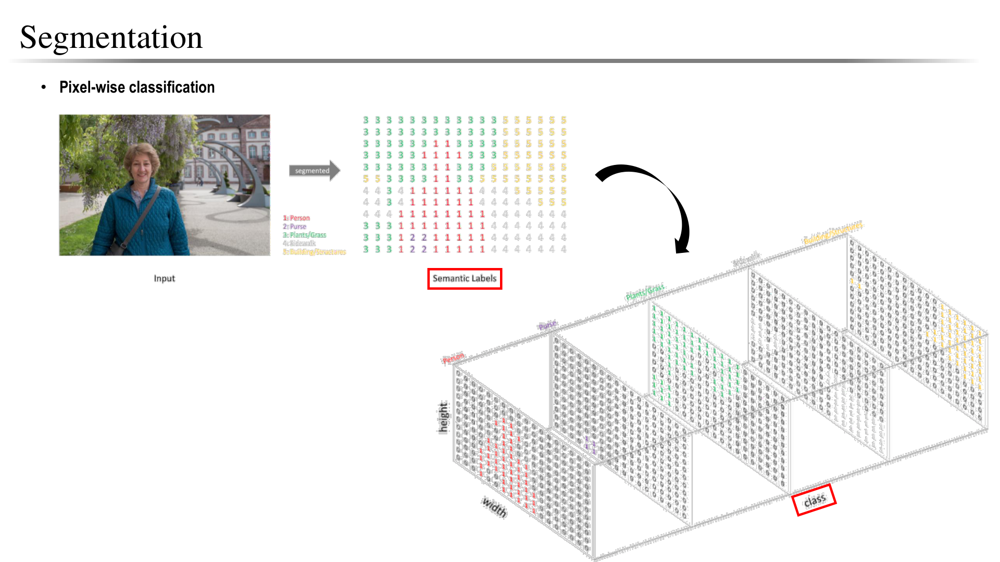
그림은 한 이미지에서 모든 픽셀 위치마다 클래스 점수를 만드는 Dense prediction을 보여줍니다.
Semantic segmentation의 logits는 보통 H×W×C이며, 클래스 방향 Softmax 후 각 위치의 최대 점수 클래스를 선택합니다.
그림 읽기 — 클래스 번호 맵과 One-hot 맵
그림 위쪽의 Semantic Labels는 각 픽셀에 클래스 번호 하나를 기록한 H×W 맵입니다. 예를 들어 1=사람, 2=가방, 3=식물, 4=보도, 5=건물입니다. 이 번호는 범주의 이름을 대신할 뿐, 값이 크다고 가능성이 높다는 뜻은 아닙니다.
아래쪽은 같은 정보를 클래스별 0·1 맵 C개로 나눈 One-hot 표현입니다. 한 클래스의 맵에서는 해당 클래스인 픽셀을 1, 나머지를 0으로 표시합니다. 각 위치가 정확히 한 클래스에 속하는 유효 픽셀이라면, 같은 위치의 C개 값 중 하나만 1입니다.
| 표현 | 크기 예시 — 공간 우선 표기 | 한 픽셀에 담기는 정보 |
|---|---|---|
| 클래스 번호 맵 | H×W |
선택된 클래스 번호 하나 |
| One-hot 맵 | H×W×C |
클래스별 해당 여부 0 또는 1 |
| 모델의 logits | H×W×C |
클래스별 실수 점수 |
| Softmax 확률 맵 | H×W×C |
클래스별 확률, 클래스 방향 합이 1 |
One-hot은 정답이나 확정된 분류 결과를 표현하는 방식입니다. 모델이 처음부터 모든 위치에 0·1만 출력하는 것은 아닙니다. 구현에서는 정답을 One-hot으로 직접 저장하지 않고 클래스 번호 맵으로 Cross-Entropy를 계산할 수도 있습니다.
(0,0)에는 어떤 정보가 있을까?
좌표를 (행, 열)로 쓸 때 (0,0)은 좌측 상단 픽셀입니다. 이 위치가 식물이라고 가정하면, 그림의 클래스 순서에 따른 One-hot 벡터는 (0,0,1,0,0)입니다.
| 클래스 채널 | (0,0) 위치의 One-hot 값 |
의미 |
|---|---|---|
| 사람 | 0 | 이 픽셀은 사람이 아님 |
| 가방 | 0 | 이 픽셀은 가방이 아님 |
| 식물 | 1 | 이 픽셀은 식물에 속함 |
| 보도 | 0 | 이 픽셀은 보도가 아님 |
| 건물 | 0 | 이 픽셀은 건물이 아님 |
따라서 각 클래스 맵의 (0,0)에는 ‘그 픽셀이 해당 클래스인지’에 대한 정보가 담깁니다. (0,0)이 이미지 전체의 클래스 정보를 모으는 특별한 자리는 아니며, 다른 모든 좌표도 같은 방식으로 표현됩니다. 일반적인 CNN 중간 특징의 채널은 이처럼 클래스에 직접 대응한다고 볼 수 없습니다.
예측 흐름 — 점수에서 최종 픽셀 클래스로
모델의 (0,0) 위치 Softmax 확률이 클래스 순서대로 (0.03, 0.02, 0.90, 0.04, 0.01)이라면, 가장 높은 식물을 선택합니다. 최종 클래스 번호 맵에는 3을, 이를 One-hot으로 바꾸면 (0,0,1,0,0)을 기록합니다.
즉, 이미지 → 위치별 클래스 점수(logits) → 클래스 방향 Softmax → 최대 점수 클래스 선택 → 픽셀별 라벨 맵의 흐름입니다. 이 그림은 클래스가 상호 배타적인 Semantic segmentation을 설명하며, 여러 클래스가 동시에 가능한 픽셀별 다중 라벨 문제와는 구분합니다.
분류처럼 이미지 전체를 하나의 벡터로 압축해 끝내지 않고 어느 특징이 어느 위치에서 나왔는지 보존해야 합니다.
이 때문에 다운샘플링으로 넓은 문맥을 얻으면서 업샘플링으로 위치를 복원하는 설계가 중요해집니다.
Why segmentation? — 윤곽과 픽셀 단위 판단
자료: PDF 64쪽.
교안 그림 펼쳐 보기 — 본문 설명을 읽은 뒤 대조
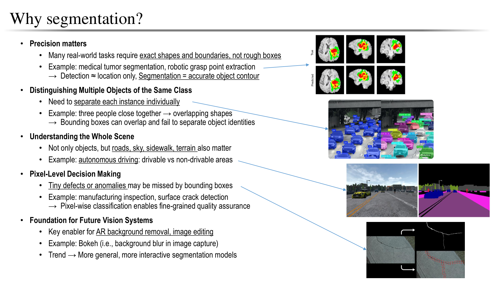
로봇의 집기, 도로 주행 영역, 표면 균열처럼 박스 내부가 전부 같은 의미가 아닌 작업에는 정확한 영역이 필요합니다.
같은 클래스의 여러 개체를 분리하려면 Semantic segmentation을 넘어 Instance segmentation이 필요합니다.
그림의 의료·도로·제조 예시는 분할의 사용 목적을 보여줍니다.
경계가 중요하다는 이유만으로 모든 분할 모델이 정확한 경계를 보장하는 것은 아닙니다.
작은 결함이나 얇은 구조는 전용 데이터와 해상도·평가가 필요합니다.
Classical segmentation — 픽셀 통계와 경계 이용
자료: PDF 66쪽.
교안 그림 펼쳐 보기 — 본문 설명을 읽은 뒤 대조

| 방법 | 핵심 단서 | 잘 작동하는 조건과 한계 |
|---|---|---|
| Threshold/Otsu | 밝기 분포 | 전경·배경 밝기가 분리될 때 유리 |
| K-means | 색·특징의 유사성 | 같은 색의 다른 의미를 구분하기 어려움 |
| GrabCut | 전경·배경 모델과 그래프 최적화 | 초기 박스·사용자 입력이 도움 |
| Canny + Watershed | 경계·Marker와 영역 확장 | 경계 잡음·과분할 관리 필요 |
이 방법들은 별도 대규모 라벨 학습 없이 쓸 수 있지만 ‘사람’·‘자동차’ 같은 의미를 자동으로 알지는 못합니다.
단순 배경의 산업 장면에서는 학습 모델보다 적은 비용으로 충분할 수도 있습니다.
Segmentation category — Semantic·Instance·Panoptic
자료: PDF 67쪽.
교안 그림 펼쳐 보기 — 본문 설명을 읽은 뒤 대조

| 구분 | 출력 | 사람 세 명이 있을 때 |
|---|---|---|
| Semantic | 픽셀별 클래스 | 모두 사람 클래스, ID는 구분하지 않음 |
| Instance | 개별 물체별 마스크 | 사람 1·2·3을 각각 분리 |
| Panoptic | 모든 픽셀의 의미와 개체 ID | 사람들을 구분하고 도로·하늘도 포함 |
Things는 셀 수 있는 개체, Stuff는 도로·잔디 같은 배경 영역입니다.
같은 클래스끼리 분리하고 싶은지, 장면의 배경까지 모두 설명할지에 따라 필요한 정답 주석과 모델 출력이 달라집니다.
3. FCN — 위치별 점수 만들기
FCN Overview — 분류 CNN을 공간 예측기로 바꾸기
자료: PDF 68쪽.
교안 그림 펼쳐 보기 — 본문 설명을 읽은 뒤 대조

FCN은 분류 CNN의 Fully connected 계산을 Convolution으로 바꾸어 위치별 클래스 점수 맵을 만듭니다.
낮은 해상도의 점수 맵을 업샘플링해 원본 좌표계의 예측으로 맞춥니다.
학습 가능한 업샘플링과 Skip fusion을 포함한 End-to-end 의미 분할의 대표적인 초기 접근입니다.
‘모든 FC를 단순히 1×1로 바꾼다’는 요약보다 기존 FC가 보던 공간 범위를 유지하는 Conv 변환으로 이해하는 것이 정확합니다.
업샘플링만으로 사라진 세부 정보가 모두 복구되지는 않습니다.
FCN Skip fusion — 깊은 의미와 얕은 위치 결합
자료: PDF 69쪽.
교안 그림 펼쳐 보기 — 본문 설명을 읽은 뒤 대조
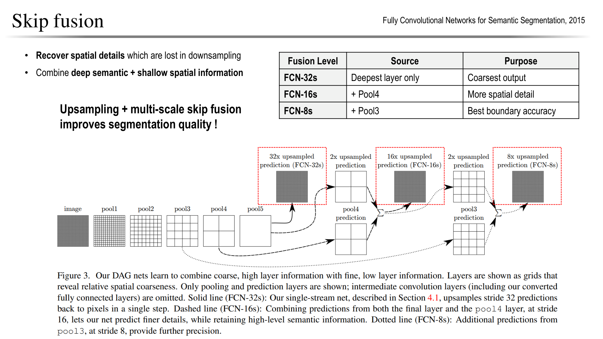
FCN-32s는 가장 깊고 거친 점수 맵을, FCN-16s는 Pool4 정보를, FCN-8s는 Pool3 정보까지 사용합니다.
깊은 특징은 무엇인지, 얕은 특징은 어디인지에 도움을 주므로 결합 후 윤곽이 세밀해질 수 있습니다.
32·16·8은 입력에 대한 예측 격자의 Stride를 나타내며 클래스 수나 업샘플링 층 수가 아닙니다.
원 FCN의 점수 맵 합산과 뒤의 U-Net의 특징 Concatenation은 다른 Skip 결합 방식입니다.
FCN Training — 픽셀별 Softmax Cross-Entropy
자료: PDF 70쪽.
교안 그림 펼쳐 보기 — 본문 설명을 읽은 뒤 대조

각 유효 픽셀 x의 정답 클래스 y(x)에 대해 음의 로그 확률을 평균합니다.
Ω는 Ignore 영역을 제외한 위치 집합입니다.
그림의 고양이 분류 점수 하나가 공간 Heatmap으로 바뀌는 것이 핵심입니다.
클래스 불균형이나 경계 품질은 기본 픽셀 손실만으로 충분하지 않을 수 있어 가중치·샘플링·다른 손실을 추가하기도 합니다.
FCN Summary — 분할의 기본 틀과 한계
자료: PDF 71쪽.
교안 그림 펼쳐 보기 — 본문 설명을 읽은 뒤 대조

FCN은 사전학습 Backbone을 재사용하고 전체 이미지를 한 번에 처리하는 학습 가능한 Dense predictor를 제시했습니다.
Skip fusion으로 단순 업샘플링보다 세부 위치를 보완할 수 있습니다.
그림의 출력은 정답 경계보다 거칠거나 얇은 영역을 잃을 수 있습니다.
기본 Semantic FCN은 사람 두 명을 같은 클래스 하나로 표현하므로 같은 종류의 개체를 분리하는 기능이 별도로 필요합니다.
§5의 Mask R-CNN은 RoI별 마스크로 이 문제에 접근합니다.
4. U-Net — 문맥과 경계 결합
U-Net Architecture — 문맥과 위치를 U자 경로로 결합
자료: PDF 81쪽.
교안 그림 펼쳐 보기 — 본문 설명을 읽은 뒤 대조

그림은 왼쪽 위 입력 → 왼쪽 아래로 축소 → 바닥에서 문맥 처리 → 오른쪽 위로 확대 → 픽셀별 분류 출력 순서로 읽습니다. 아래 크기는 높이×너비×채널(H×W×C) 순서이며, 배치 차원은 생략합니다. 그림의 파란 상자 위 숫자는 채널 수, 옆 숫자는 공간 크기입니다.
1. 입력 572×572×1 — 왜 채널이 1개일까?
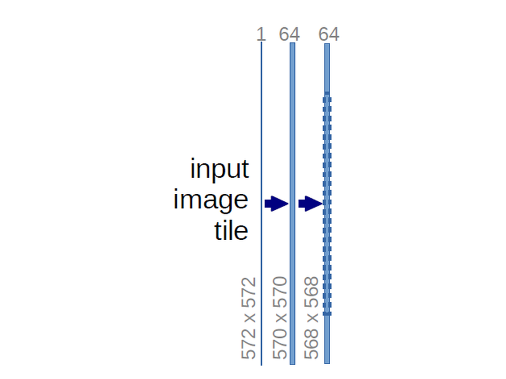
이 구조도는 흑백 영상 입력의 예시이므로 픽셀마다 밝기 값 하나를 사용해 입력 채널이 1입니다. RGB 컬러 영상이라면 첫 층의 입력 채널을 3으로 바꾸어 사용할 수 있습니다. U-Net이 반드시 흑백만 처리해야 하는 것은 아닙니다.
572×572는 이 그림에서 사용하는 입력 타일 크기입니다. 원 U-Net은 Padding 없는 합성곱 때문에 출력이 작아지므로, 최종 예측 영역보다 넓은 주변 문맥을 입력으로 제공합니다.
2. 첫 합성곱 570×570×64 — 공간 크기와 채널은 다른 이유로 바뀐다
첫 파란 화살표는 3×3 Convolution, Stride 1, Padding 0과 ReLU입니다. 공간 출력 크기는 다음 식으로 결정됩니다. 여기서는 Dilation 1을 사용합니다.
3×3 필터가 입력 밖으로 나가지 않고 이동할 수 있는 위치만 계산하므로 가로·세로가 각각 2씩 줄어듭니다. ReLU는 크기를 줄이지 않으며, 572→570은 합성곱의 결과입니다.
채널은 출력 필터를 64개 사용하도록 설계했기 때문에 1→64가 됩니다. 필터 하나가 입력의 모든 채널을 보고 특징 맵 하나를 만듭니다. 첫 층의 필터 하나는 3×3×1이며, 이를 64개 사용해 64개 특징 맵을 얻습니다. RGB 입력이면 필터 하나의 깊이가 3×3×3으로 달라져도 출력 필터가 64개라면 출력 채널은 64입니다.
64는 클래스 수나 수식으로 자동 결정된 값이 아니라 모델 폭을 정하는 설계값입니다. 필터의 개수는 설계하고, 각 필터의 가중치는 학습합니다. 서로 다른 공간·질감 특징을 표현할 수 있지만 필터마다 역할을 사람이 지정하는 것은 아닙니다.
두 번째 3×3 합성곱은 570×570×64 → 568×568×64입니다. 이번에는 필터 하나가 64개 입력 채널을 모두 보므로 크기가 3×3×64이고, 출력 필터 수를 다시 64개로 정해 채널은 유지됩니다.
3. Contracting path — 공간은 줄이고 특징의 폭은 늘리기

빨간 아래 화살표는 2×2 Max Pooling, Stride 2입니다. 가로·세로를 절반으로 줄이지만 채널 수는 바꾸지 않습니다. 그다음 합성곱에서 출력 필터 수를 늘립니다.
| 위치 | 순서대로 변하는 크기 | 변화 이유 |
|---|---|---|
| 첫 블록 | 572×572×1 → 570×570×64 → 568×568×64 |
Valid Conv 두 번, 출력 필터 64개 |
| 두 번째 블록 | Pool 284×284×64 → Conv 282×282×128 → Conv 280×280×128 |
Pool로 반 크기, Conv에서 채널 128로 확대 |
| 세 번째 블록 | Pool 140×140×128 → Conv 138×138×256 → Conv 136×136×256 |
같은 규칙 반복 |
| 네 번째 블록 | Pool 68×68×256 → Conv 66×66×512 → Conv 64×64×512 |
같은 규칙 반복 |
| 바닥 블록 | Pool 32×32×512 → Conv 30×30×1024 → Conv 28×28×1024 |
가장 낮은 해상도에서 문맥 처리 |
깊어질수록 각 특징이 참조하는 입력 범위가 넓어져 큰 구조와 문맥을 다룰 수 있습니다. 동시에 채널을 64→128→256→512→1024로 늘려 다양한 특징을 표현합니다. Pooling 자체가 채널을 두 배로 만드는 것은 아닙니다.
4. Expanding path — 확대하고 Skip 특징을 결합하기
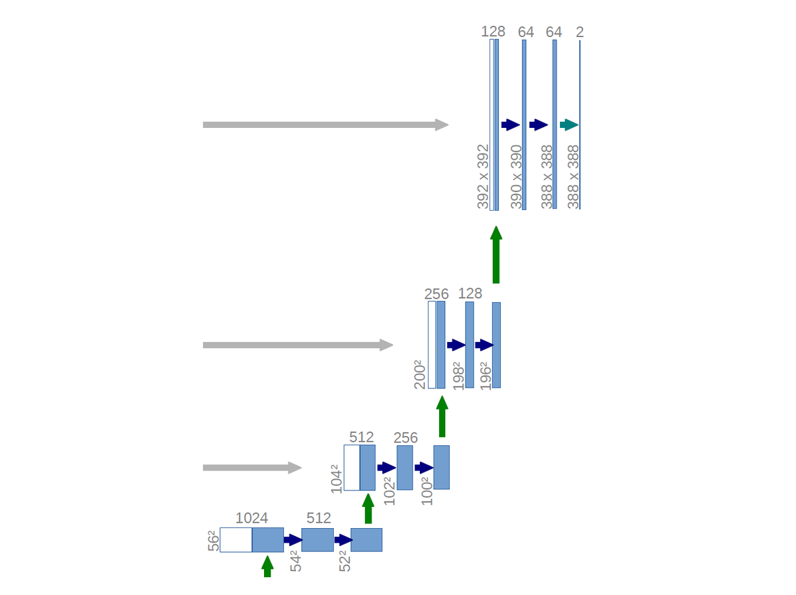
초록 위 화살표의 2×2 Up-convolution은 이 구조에서 가로·세로를 2배로 늘리고 채널을 절반으로 줄이도록 설계되어 있습니다. 이후 왼쪽 경로에서 복사해 온 특징을 Crop한 뒤 채널 방향으로 Concatenate하고, 3×3 Valid Conv를 두 번 적용합니다.
| 오른쪽 블록 | Up-convolution 출력 | Crop한 왼쪽 특징과 결합 | 3×3 Conv 두 번의 출력 |
|---|---|---|---|
| 첫 확대 | 56×56×512 |
56×56×512와 Concat → 56×56×1024 |
54×54×512 → 52×52×512 |
| 두 번째 확대 | 104×104×256 |
104×104×256과 Concat → 104×104×512 |
102×102×256 → 100×100×256 |
| 세 번째 확대 | 200×200×128 |
200×200×128과 Concat → 200×200×256 |
198×198×128 → 196×196×128 |
| 네 번째 확대 | 392×392×64 |
392×392×64와 Concat → 392×392×128 |
390×390×64 → 388×388×64 |
예를 들어 첫 확대에서 28×28×1024 → 56×56×512가 되고, 왼쪽 특징 512채널을 이어 붙이면 1024채널이 됩니다. Concatenation은 특징값을 더하는 연산이 아니라 채널을 이어 붙이는 연산입니다. 이후 합성곱이 두 경로의 정보를 함께 가공합니다.
5. Skip connection — 위치 정보를 보완하고 Copy·Crop·Concat으로 결합하기

Skip connection의 목적은 축소 과정에서 약해진 세밀한 위치·경계 정보를 확대 경로에 직접 전달하는 것입니다. 두 경로가 제공하는 정보는 다음과 같이 서로 보완됩니다.
| 특징의 출처 | 주로 제공하는 정보 | 분할에서의 역할 |
|---|---|---|
| 축소 경로의 얕은 고해상도 특징 | 윤곽·질감·경계 등 세밀한 공간 단서 | 물체의 경계가 정확히 어디에 있는지 보완 |
| 깊은 층을 거쳐 확대되는 특징 | 넓은 입력 범위를 고려한 구조·의미적 문맥 | 해당 영역이 어떤 대상인지 판단하는 데 기여 |
Pooling으로 공간 해상도를 줄이면 큰 구조를 효율적으로 다룰 수 있지만, 서로 가까운 위치를 구별하는 세부 정보는 약해질 수 있습니다. Up-convolution으로 격자 크기를 키워도 축소 과정에서 사라진 정보를 모두 되찾는 것은 아닙니다. 그래서 축소 경로에서 보존한 고해상도 특징을 우회 전달하고, 확대 경로의 문맥 특징과 함께 사용합니다. 이 표의 역할은 경향을 설명한 것이며, 특정 층이 위치 또는 의미 정보만 담는다는 뜻은 아닙니다.
예를 들어 세포 분할에서 깊은 특징은 **“이 주변이 세포 영역인가?”**를 판단하는 문맥을 제공하고, 얕은 특징은 **“세포의 윤곽이 정확히 어디인가?”**를 판단할 단서를 보완합니다. 결합 뒤의 합성곱이 두 정보를 함께 가공해 픽셀별 분류에 필요한 특징을 만듭니다.
그림의 회색 연결과 오른쪽 블록은 Copy → Crop → Concat → Conv 순서로 읽습니다.
- Copy: 대응하는 축소 블록의 특징을 확대 경로로 전달합니다. 원본 입력 영상을 그대로 붙이는 것이 아니라, 합성곱으로 추출한 특징 맵을 전달합니다.
- Crop: 두 특징 맵의 공간 크기를 맞춥니다. 원 U-Net은 반복된 Valid convolution 때문에 대응하는 왼쪽 특징이 오른쪽 특징보다 크므로, 왼쪽 특징의 중앙 영역을 잘라 사용합니다.
- Concat: 크기를 맞춘 두 특징을 채널 방향으로 이어 붙입니다. 최상단에서는
392×392×64두 개를 결합해392×392×128을 만듭니다. 공간 크기는 유지되고 채널 수가 합쳐집니다. - Conv: 이어 붙인 위치 단서와 문맥 특징을 함께 가공합니다. 최상단의 두 3×3 합성곱은
392×392×128 → 390×390×64 → 388×388×64로 변환합니다.
각 연결에서 필요한 Crop 크기는 다음과 같습니다.
| 왼쪽에서 복사할 특징 | 오른쪽에서 필요한 크기 | 가장자리 Crop — 각 방향 |
|---|---|---|
64×64×512 |
56×56×512 |
위·아래·좌·우 각각 4픽셀 |
136×136×256 |
104×104×256 |
각각 16픽셀 |
280×280×128 |
200×200×128 |
각각 40픽셀 |
568×568×64 |
392×392×64 |
각각 88픽셀 |
여기서 Crop 픽셀은 각 특징 맵 좌표계의 단위입니다. Skip의 핵심 목적은 위치·경계 정보와 문맥의 결합이고, Crop은 원 U-Net에서 두 특징의 공간 크기를 맞추기 위한 절차입니다. 원 U-Net의 결합 방식은 채널을 이어 붙이는 Concatenation이며, ResNet의 원소별 덧셈과 다릅니다.
6. 최종 388×388×2 — 왜 마지막 채널은 2개일까?
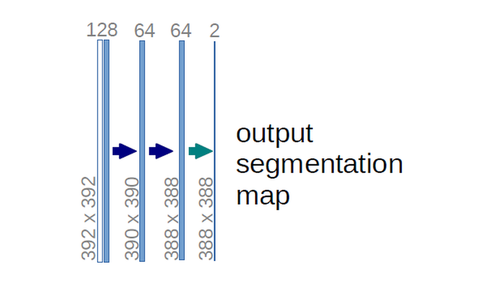
마지막 청록 화살표는 1×1 Convolution입니다. 공간 크기 388×388은 유지하고 각 위치의 64차원 특징을 2개 클래스 점수로 변환합니다. 그림의 2는 전경·배경처럼 분류할 클래스 수의 예시이며 물체 개수나 RGB 채널을 뜻하지 않습니다.
클래스 방향 Softmax 후 각 픽셀의 클래스를 선택하면 388×388 라벨 맵을 얻습니다. 클래스가 K개인 문제라면 마지막 출력 채널을 K로 바꿉니다.
처음 572×572보다 출력이 작은 이유는
- 3×3 합성곱을 Padding 없이 반복하기 때문입니다.
- Upsampling은 격자를 확대하지만 반복해서 줄어든 경계를 모두 원상 복구하지는 않습니다.
- 이 예에서는 입력의 중앙 388×388 영역을 예측하며, 바깥쪽은 각 면 92픽셀의 주변 문맥에 해당합니다.
크기·채널 변화를 읽는 핵심 규칙

- 3×3 Valid Conv: 가로·세로는 각각 2 감소, 출력 채널은 필터 개수로 결정.
- 2×2 Max Pool: 가로·세로는 절반, 채널은 유지.
- 2×2 Up-conv: 이 구조에서는 가로·세로 2배, 채널 절반.
- Copy & Crop + Concat: 공간을 맞춘 뒤 채널을 이어 붙임.
- 1×1 Conv: 공간은 유지하며 최종 클래스 채널로 변환.
이 숫자는 원 논문의 Valid convolution U-Net 기준입니다. Same-padding을 쓰는 현대 변형에서는 중간 크기와 Crop 필요 여부가 달라질 수 있습니다.
출처: U-Net 원 논문 — 그림 1과 §2 Network Architecture.
Transpose convolution — 학습 가능한 업샘플링
자료: PDF 82쪽.
교안 그림 펼쳐 보기 — 본문 설명을 읽은 뒤 대조

그림은 입력의 각 값이 필터를 통해 출력 영역에 기여하고 겹치는 위치가 합산되는 모습을 보여줍니다.
Transposed convolution은 Convolution을 행렬로 썼을 때 전치된 연결 구조에 해당합니다.
원래 입력을 정확히 되찾는 역연산은 아닙니다.
Stride·Kernel·Padding으로 출력 크기를 정하고, 가중치를 학습해 해상도를 확장합니다.
겹침이 불균일하면 Checkerboard artifact가 생길 수 있어 보간 후 Conv 등 다른 업샘플링 방식도 사용됩니다.
U-Net Training (1/2) — Overlap-tile과 Elastic augmentation
자료: PDF 83쪽.
교안 그림 펼쳐 보기 — 본문 설명을 읽은 뒤 대조

Overlap-tile — 주변 문맥을 겹쳐 읽고 중앙 예측을 이어 붙이기
큰 영상은 타일로 나누어 처리하되, 출력할 영역보다 넓은 주변 문맥을 입력으로 제공합니다. 원 U-Net은 Padding 없는 합성곱을 반복하므로, 구조도에서는 572×572 입력으로 중앙 388×388 영역을 예측합니다. 인접한 입력 타일은 주변 문맥이 겹치도록 가져오고, 각 타일의 중앙 예측 영역을 이어 붙입니다. 이렇게 하면 GPU 메모리에 맞춰 처리하면서도 원 영상 전체를 작게 줄이지 않고 분할할 수 있습니다.
Mirroring — 원본 영상 가장자리에서 부족한 문맥 보충하기
영상 내부에서는 주변 픽셀을 실제 영상에서 가져올 수 있지만, 원본 영상의 가장자리에서는 필요한 문맥 일부가 영상 밖에 있어 존재하지 않습니다. Mirroring은 경계 안쪽의 픽셀을 거울처럼 반사해 입력의 바깥쪽을 확장하는 방법입니다. 이를 통해 가장자리 픽셀도 중앙 예측 영역에 놓아 분할할 수 있습니다.
| 구분 | 적용 위치와 역할 |
|---|---|
합성곱의 padding=0 |
각 합성곱 층에서 테두리 값을 추가하지 않고 필터가 입력 안에 들어오는 위치만 계산합니다. 그 결과 특징 맵이 작아집니다. |
| 입력 영상의 Mirroring | 원본 영상 밖에 필요한 주변 영역을 반사된 값으로 보충합니다. 입력을 확장한 뒤에도 내부 합성곱은 padding=0을 유지할 수 있습니다. |
의료 영상에서 세포·조직이 가장자리에 걸쳐 있는 경우, 바깥을 0으로 채우면 인위적인 검은 영역과 급격한 밝기 경계가 생길 수 있습니다. Mirroring은 인접한 영상의 밝기·질감을 반사해 이러한 경계 영향을 줄이는 데 도움이 될 수 있습니다. 이는 가장자리의 예측 품질을 유지하는 관점에서 해석할 수 있지만, 의료 영상에서 항상 정확도를 높인다는 보장은 아닙니다.
Mirroring은 실제 관측 영상의 픽셀 값을 재사용해 경계 밖의 문맥을 보충하는 방법입니다. 따라서 반사에 사용한 값 자체를 “실측 데이터가 아니다”라고 표현하면 부정확합니다. 의료기기로 측정한 값을 가져오되, 그 값을 반사된 위치에 배치합니다. 값의 출처는 실제 관측 데이터이지만, 확장된 위치의 조직을 직접 측정한 것은 아니라는 점을 구분해야 합니다. 즉, 확장된 영역의 공간적 배치는 주변 영상에 근거한 근사이며 실제 영상 바깥의 조직을 복원한 결과는 아닙니다.
padding=0은 각 합성곱에서 테두리 값을 추가하지 않는 설정이고, Mirroring은 필요한 경계 문맥을 관측값의 재사용으로 보충하는 처리입니다. 논문이 명시한 목적은 원본 영상 가장자리에서 부족한 문맥을 보충해 전체 영상을 분할하는 것입니다.
여기서 Mirroring은 입력의 경계를 확장하는 처리이며, 영상을 좌우로 뒤집어 학습 샘플을 늘리는 Flip augmentation과는 역할이 다릅니다.
출처: U-Net 원 논문 — §1과 그림 2의 Overlap-tile 설명.
Elastic augmentation — 조직·세포의 변형을 학습하기
Elastic transformation은 조직·세포의 변형을 모사해 적은 학습 영상에서도 다양한 모양을 보게 합니다.
영상과 정답 마스크에 같은 기하 변환을 적용해야 하며, 평가 타일이 학습 영상과 겹쳐 데이터 누수가 생기지 않도록 원본 단위로 분리하는 것이 중요합니다.
U-Net Training (2/2) — 붙은 세포 사이 경계를 강조하는 손실
자료: PDF 84쪽.
교안 그림 펼쳐 보기 — 본문 설명을 읽은 뒤 대조

클래스 빈도 가중치와 경계 가중치를 합쳐 픽셀별 손실의 중요도를 다르게 줍니다.
wc는 클래스 균형, d1·d2는 가장 가까운 두 개체 경계까지의 거리입니다.
두 세포 사이 좁은 틈에서 가중치를 크게 해 서로 붙은 대상을 나누도록 유도합니다.
단순히 모든 윤곽 픽셀만 가중하는 식과는 다릅니다. 손실을 최소화하는 표기에서는 음의 로그 부호가 필요합니다.
U-Net Experiments — 세포 분할의 IoU 개선
자료: PDF 85쪽.
교안 그림 펼쳐 보기 — 본문 설명을 읽은 뒤 대조
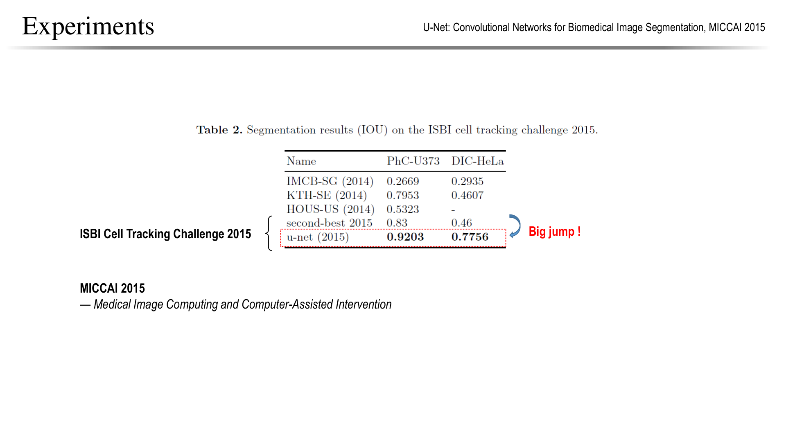
| 데이터 | 2015년 비교 기준 | U-Net | 절대 차이 |
|---|---|---|---|
| PhC-U373 | 0.83 | 0.9203 | +0.0903 |
| DIC-HeLa | 0.46 | 0.7756 | +0.3156 |
슬라이드는 ISBI Cell Tracking Challenge의 분할 IoU를 비교합니다.
U-Net은 특히 DIC-HeLa에서 큰 차이를 보입니다.
경계 가중치와 다중 해상도 특징·증강을 조합한 효과로 이해하되, 표 하나로 각 요소의 기여를 따로 확정할 수는 없습니다.
대회 이름에 Tracking이 들어가도 이 표의 값은 MOTA·IDF1이 아닙니다. 또 특정 두 세포 데이터의 결과를 모든 의료 영상의 성능으로 일반화해서는 안 됩니다.
5. Mask R-CNN — 개체별 마스크
Mask R-CNN Motivation — 박스마다 마스크 예측하기
자료: PDF 72쪽.
교안 그림 펼쳐 보기 — 본문 설명을 읽은 뒤 대조
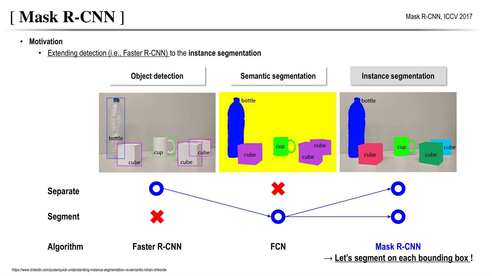
Faster R-CNN은 개체를 박스로 구분하지만 픽셀 윤곽은 없습니다.
Semantic FCN은 픽셀 클래스를 알지만 같은 클래스의 개체 ID를 나누지 않습니다.
Mask R-CNN은 검출한 개체마다 마스크를 예측해 두 기능을 결합합니다.
그림의 Separate는 ‘어느 개체인가를 구분’, **Segment는 ‘그 개체가 차지하는 픽셀 영역을 예측’**한다는 뜻입니다.
| 기능 | 제공하는 정보 | 한계 |
|---|---|---|
| Object detection의 Separate | 물체마다 별도 박스와 클래스를 예측해 개체 구분 | 박스 안의 정확한 윤곽은 모름 |
| Semantic segmentation의 Segment | 각 픽셀이 어떤 클래스에 속하는지 예측 | 같은 클래스의 여러 개체는 구분하지 않음 |
| Instance segmentation | 개체 구분 + 개체별 픽셀 마스크 | 두 기능을 함께 수행해야 함 |
예를 들어
- 컵 두 개가 있으면, 검출은 컵 A·B를 서로 다른 박스로 찾고 Semantic segmentation은 둘의 픽셀을 모두 컵 클래스로 표시합니다.
- Mask R-CNN은 각 후보 영역(RoI)의 특징에서 컵 A의 마스크와 컵 B의 마스크를 따로 예측하므로 같은 클래스도 개체별로 나눌 수 있습니다.
즉, 물체별 영역을 찾고 → 각 영역의 픽셀 마스크를 예측하는 원리입니다.
완성된 검출 결과와 Semantic segmentation 결과를 단순히 겹치는 것이 아니라, 공유 특징 위에서 검출 Head와 Mask head를 함께 학습합니다.
박스가 겹쳐도 마스크가 개체별로 분리될 수 있습니다.
다만 심한 가림이나 잘못된 검출이 마스크 오류로 이어질 수 있어 검출과 분할 품질을 모두 평가해야 합니다.
Mask R-CNN Overview — 병렬 Mask branch
자료: PDF 73쪽.
교안 그림 펼쳐 보기 — 본문 설명을 읽은 뒤 대조
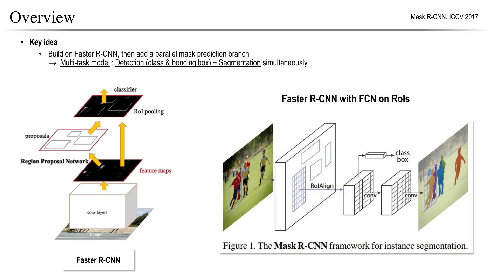
공유 Backbone과 RPN으로 후보 영역을 얻고, RoI 특징에서 클래스·박스와 마스크를 병렬로 예측합니다.
그림 오른쪽의 작은 FCN이 후보 영역 내부의 공간 구조를 보존하며 픽셀 예측을 수행합니다.
마스크가 최종 분류 결과를 픽셀마다 다시 다중 분류하는 것이 아니라, 개체의 클래스 결정과 영역 모양 예측을 분리한다는 점이 중요합니다.
학습은 분류·박스·마스크 손실을 함께 사용합니다.
Mask R-CNN Architecture — Backbone·RPN·RoIAlign·Heads
자료: PDF 74쪽.
교안 그림 펼쳐 보기 — 본문 설명을 읽은 뒤 대조
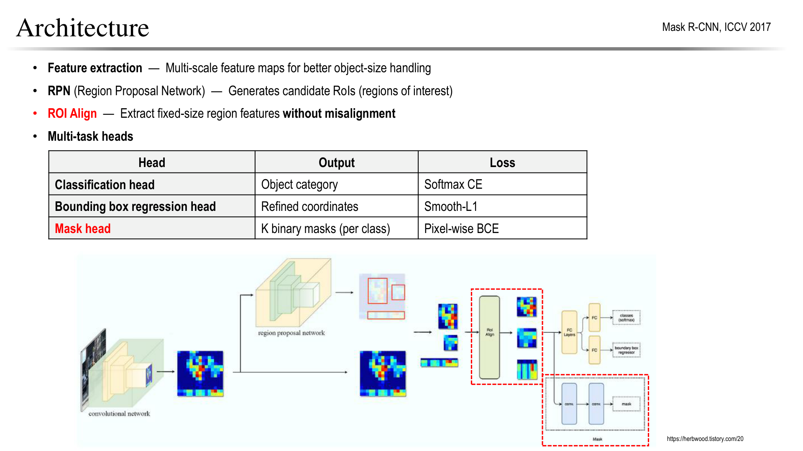
| 구성 | 역할 |
|---|---|
| Backbone/FPN | 여러 크기의 물체를 위한 특징 추출 |
| RPN | 물체 후보 영역 생성 |
| RoIAlign | 후보 영역의 고정 크기 특징을 위치 정렬을 유지하며 추출 |
| Class·Box heads | 종류와 좌표 예측 |
| Mask head | 클래스별 이진 마스크 생성 |
전체 손실은 Lcls + Lbox + Lmask입니다.
FPN은 널리 쓰이는 구성이지만 Mask R-CNN의 아이디어를 특정 Backbone 하나로 한정하는 것은 아닙니다.
뒤에서 RoIAlign과 이진 Mask head의 효과를 따로 확인합니다.
RoI Align (1/2) — RoI Pooling의 좌표 반올림
자료: PDF 75쪽.
교안 그림 펼쳐 보기 — 본문 설명을 읽은 뒤 대조

Mask R-CNN에서 인지한 문제는 **RoI Pooling의 좌표 양자화 때문에 원래 물체와 추출한 특징의 위치가 어긋나는 것(Misalignment)**입니다.
RoI 크기를 고정된 출력 크기로 바꾸는 과정에서 소수 좌표를 정수 격자에 맞추며 위치 정보가 손실됩니다.
오차는 어디에서 생길까?
| 단계 | RoI Pooling의 처리 | 발생할 수 있는 문제 |
|---|---|---|
| 1. RoI를 특징 맵으로 변환 | 원본 박스 좌표를 Stride로 나눈 뒤 경계를 정수화 | 물체의 실제 경계와 사용할 특징 영역이 달라짐 |
| 2. RoI를 Bin으로 분할 | 고정 크기 출력을 위해 나눈 각 Bin 경계도 정수화 | 서로 다른 위치의 특징이 같은 Bin에 포함되거나 제외됨 |
| 3. Bin별 Pooling | 선택된 격자 값의 최댓값 등을 집계 | 앞에서 잃은 소수 위치 정보를 복구하지 못함 |
예를 들어
- 특징 맵 좌표에서 RoI 경계가
2.4~7.8이면, 구현의 반올림·내림·올림 규칙에 따라 정수 격자로 바뀝니다. - 그 결과 원래 의도한 영역과 다른 위치의 특징을 읽을 수 있습니다. 두 차례의 양자화가 공간 정렬을 깨뜨리는 것이 핵심입니다.
왜 마스크 예측에서 더 문제가 될까?
분류는 ‘컵인가?’를 판단하므로 작은 위치 변화에도 같은 답을 낼 수 있지만, 분할은 **‘어느 픽셀까지 컵인가?’**를 맞혀야 합니다.
경계가 어긋난 특징으로 마스크를 만들면 윤곽이 밀리거나 얇은 부위가 사라질 수 있습니다.
특징 맵 Stride가 16이라면 특징 맵의 1칸 이동은 원본 좌표에서 16픽셀 이동에 해당합니다.
실제 양자화 오차가 항상 1칸이라는 뜻은 아니지만, 거친 특징 맵에서 작은 좌표 오차도 원본에서는 커질 수 있음을 보여줍니다.
이를 개선하기 위해 RoIAlign은 RoI·Bin 경계를 연속 좌표로 유지하고, 필요한 위치의 특징을 Bilinear interpolation으로 읽습니다. 다음 항목에서 그 동작을 살펴봅니다.
RoI Align (2/2) — Bilinear interpolation으로 정렬 유지
자료: PDF 76쪽.
교안 그림 펼쳐 보기 — 본문 설명을 읽은 뒤 대조
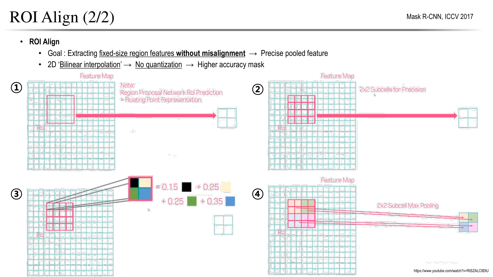
RoIAlign은 좌표 양자화를 피하고, 소수 좌표의 특징값을 Bilinear interpolation으로 읽어 공간 정렬을 유지합니다.
RoI Pooling과 마찬가지로 고정 크기 특징을 만들지만, 값을 읽는 위치를 더 정확하게 처리합니다.
어떻게 해결했을까?
- RoI 경계를 연속 좌표로 유지: 특징 맵으로 옮긴 RoI 경계가
2.4~7.8이면 정수로 반올림하지 않고 그대로 사용합니다. - Bin 경계도 정수화하지 않음: RoI를 필요한 출력 크기의 격자로 나누되, 내부 경계의 소수 위치를 유지합니다.
- 샘플 위치에서 보간: 각 Bin 안의 정해진 샘플 위치마다 주변 네 격자 값을 거리 비율로 가중합합니다.
- 고정 크기 특징 생성: Bin 안의 샘플 값을 Max 또는 Average 등으로 집계해 출력합니다.
샘플이 네 격자 사이 정중앙이면 각각의 가중치가 1/4입니다. 네 값이 2, 4, 6, 8이면 보간값은 (2+4+6+8)/4=5입니다. 한쪽에 가까워지면 그쪽 격자 값의 비중이 커집니다.
따라서 소수 좌표를 버리는 대신 그 위치의 값을 계산해서 읽는 것이 핵심입니다. 학습으로 새로운 샘플 좌표를 찾아내는 연산은 아니며, Backbone 특징의 위치 대응을 보존합니다.
어떤 분야에서 의의가 있을까?
| 분야 | 위치 정렬이 중요한 이유 | RoIAlign의 기여 |
|---|---|---|
| Instance segmentation | 개체의 윤곽과 얇은 부위를 픽셀 단위로 구분해야 함 | RoI 특징과 실제 물체의 위치 차이를 줄여 정밀한 마스크 예측 지원 |
| 정밀 객체 검출 | 박스의 작은 좌표 차이가 높은 IoU 기준에서 오류가 됨 | 잘 정렬된 특징으로 박스 좌표 보정에 도움 |
| 인체 Keypoint 검출 | 손목·발목 등 관절 위치를 정확히 찾아야 함 | 사람 RoI 안에서 위치별 특징을 정밀하게 추출 |
Mask R-CNN에서의 핵심 의의는 영역의 종류를 분류하기 위한 특징 추출을, 픽셀·관절 위치를 예측하는 공간 정렬된 특징 추출로 발전시켰다는 점입니다.
다만 보간은 다운샘플링으로 사라진 세부 정보를 모두 되살리는 것은 아니므로, 작은 대상의 해상도 한계까지 해결하지는 않습니다.
Mask head — 클래스별 독립 이진 분할
자료: PDF 77쪽.
교안 그림 펼쳐 보기 — 본문 설명을 읽은 뒤 대조
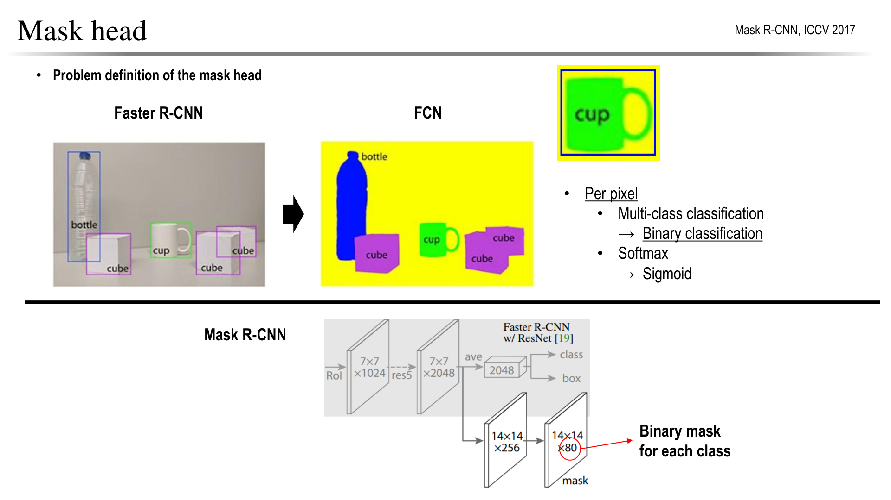
K개 클래스에 대해 K×m×m 마스크 logits를 출력하고, 각 픽셀에 Sigmoid를 적용합니다.
학습 시 정답 클래스 k의 채널에만 Binary Cross-Entropy를 적용합니다.
추론에서는 분류 Head가 고른 클래스의 마스크를 사용합니다.
이는 클래스 방향 Softmax로 픽셀마다 경쟁시키는 방식과 다릅니다.
어떤 클래스인지는 분류 Head가, 그 개체의 어느 픽셀인지는 Mask head가 담당해 두 작업의 간섭을 줄입니다.
작업별로 다른 층을 사용하는 이유
Mask R-CNN은 공통 특징을 추출한 뒤, 작업에 맞는 Head로 분기합니다. 아래는 대표적인 FPN 구성의 흐름을 설명하기 위해 생성한 개념도입니다.
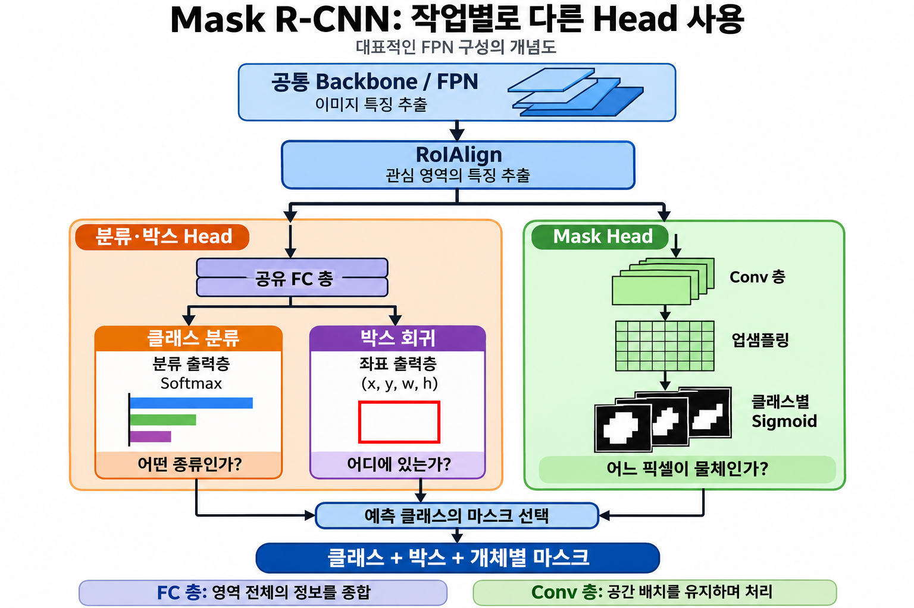
| 작업 | 사용하는 대표 층 | 필요한 정보와 역할 |
|---|---|---|
| 클래스 분류 | 공유 FC 층 → 분류 출력층 → Softmax | RoI 전체 정보를 종합해 물체 종류 결정 |
| 박스 회귀 | 공유 FC 층 → 좌표 출력층 | RoI 전체 정보를 종합해 박스 좌표 보정 |
| 마스크 예측 | Conv 층 → 업샘플링 → 클래스별 Sigmoid | 공간 배치를 유지하며 각 픽셀의 물체 포함 여부 예측 |
분류·박스 회귀는 앞부분의 FC 층을 공유하고 마지막 출력층을 나눕니다. Mask head는 별도 작은 FCN으로 구성해 위치별 특징을 처리합니다. 예를 들어 손잡이·다리 같은 얇은 부위를 그리려면 ‘그 특징이 있는가’뿐 아니라 ‘어디에 있는가’를 유지해야 하므로 Conv 층이 적합합니다. 세부 층 구성은 Backbone과 구현에 따라 달라질 수 있습니다.
그림은 위에서 아래로 다음 순서로 읽습니다.
- 공통 특징 추출: Backbone/FPN에서 특징 맵을 만들고, 후보 RoI를 RoIAlign으로 처리합니다. 후보를 만드는 RPN은 이 개념도에서 생략했습니다.
- 병렬 예측: 분류·박스 Head와 Mask head가 각자의 출력을 계산합니다. 마스크를 만들기 위해 분류 결과가 나올 때까지 기다리는 직렬 구조는 아닙니다.
- 마스크 채널 선택: 분류 Head가 고른 클래스에 해당하는 마스크 채널을 선택합니다. 채널을 고르는 기준은 클래스이며, 박스 회귀값은 아닙니다.
- 최종 결과 구성: 선택한 마스크를 예측 박스의 위치·크기에 맞춰 이미지 좌표계로 배치하고 클래스·박스와 함께 출력합니다.
학습에서도 역할을 나눕니다. 분류는 클래스 손실, 박스는 좌표 손실, 마스크는 정답 클래스 채널의 픽셀별 Binary Cross-Entropy를 사용하고, 이 손실들을 함께 최적화합니다. 공통 Backbone은 여러 작업의 학습 신호를 함께 받습니다.
Mask R-CNN Experiments (1/3) — Sigmoid와 FCN
자료: PDF 78쪽.
교안 그림 펼쳐 보기 — 본문 설명을 읽은 뒤 대조

| 마스크 출력 방식 | AP | AP50 | AP75 |
|---|---|---|---|
| Softmax | 24.8 | 44.1 | 25.1 |
| 클래스별 Sigmoid | 30.3 | 51.2 | 31.5 |
슬라이드 조건에서 Sigmoid는 AP를 +5.5포인트 개선합니다.
이는 분류와 마스크 예측을 분리하는 설계의 근거입니다.
오른쪽 비교에서도 FCN Mask branch의 AP 33.6은 MLP의 31.5보다 높아, 공간 구조를 유지하는 예측이 유리함을 보여줍니다.
두 표는 Backbone·Head 구성이 같지 않은 별도 비교이므로 왼쪽 30.3과 오른쪽 33.6을 한 요소만 바꾼 차이로 해석하지 않습니다.
Mask R-CNN Experiments (2/3) — RoIAlign의 정렬 효과
자료: PDF 79쪽.
교안 그림 펼쳐 보기 — 본문 설명을 읽은 뒤 대조
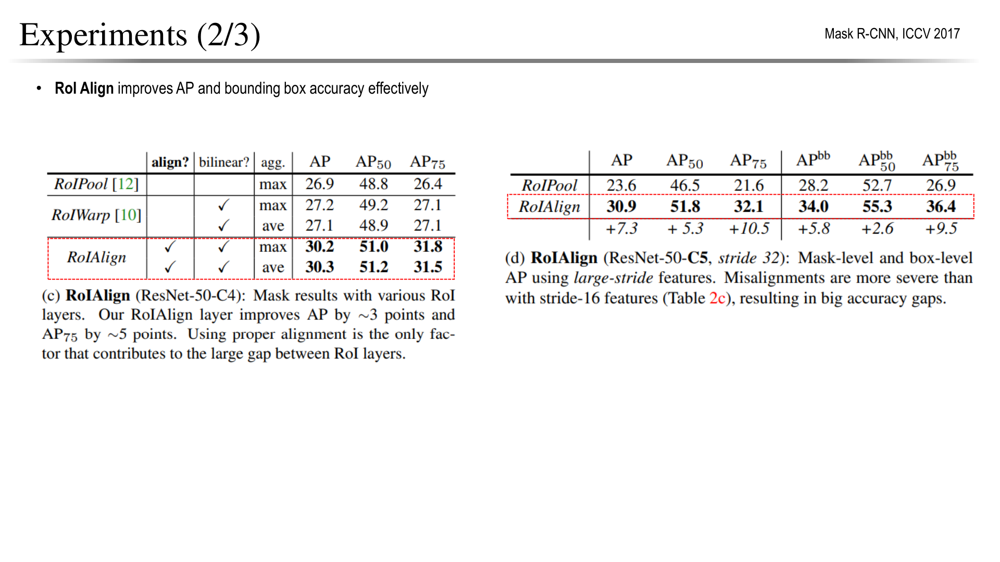
왼쪽 C4 구성에서 RoIPool의 AP 26.9가 RoIAlign에서 30.3으로, AP75는 26.4에서 31.8로 향상됩니다.
- Pool의 Max/Average만 바꾼 RoIWarp 결과는 이 격차를 설명하지 못합니다.
오른쪽 Stride 32 특징에서는 마스크 AP가 23.6→30.9(+7.3), 박스 AP가 **28.2→34.0(+5.8)**입니다.
- 거친 격자일수록 위치 오차가 크므로 정렬의 효과가 더 크게 나타납니다.
서로 다른 Backbone/Stride 표의 절대 값을 섞지 않아야 합니다.
Mask R-CNN Experiments (3/3) — 개체별 윤곽 사례
자료: PDF 80쪽.
교안 그림 펼쳐 보기 — 본문 설명을 읽은 뒤 대조
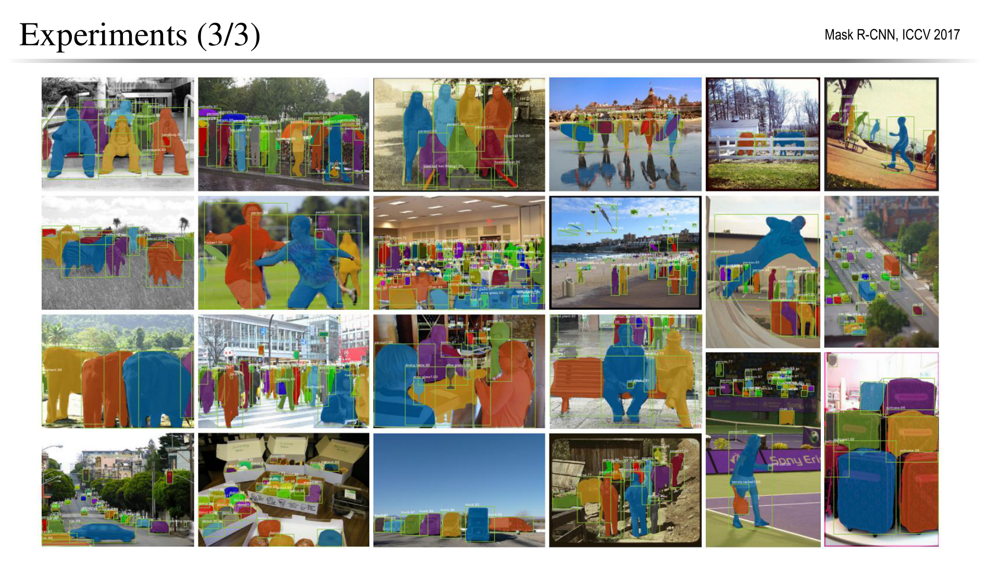
색이 다른 마스크는 개별 개체의 영역입니다.
사람·차량·동물·물건이 겹친 장면에서 박스와 윤곽을 동시에 보여줍니다.
같은 클래스라도 다른 ID의 영역이 나뉘는지, 가려진 경계나 얇은 부분을 얼마나 보존하는지 살펴봅니다.
정성 그림은 동작 예시이며 AP 계산을 대체하지 않습니다.
그림의 색이 의미 클래스와 항상 일대일 대응하는 것도 아닙니다. 학습한 클래스 밖의 모든 물체를 자동으로 분할한다는 주장과도 구분합니다.
6. SegFormer — 계층 특징의 효율적 결합
SegFormer Overview — 강한 Encoder와 가벼운 Decoder
자료: PDF 86쪽.
교안 그림 펼쳐 보기 — 본문 설명을 읽은 뒤 대조

SegFormer는 Hierarchical Transformer Encoder인 MiT로 여러 해상도의 특징을 만들고, 단순 MLP Decoder로 합쳐 Semantic segmentation을 수행합니다.
작은 물체의 세부와 큰 장면의 문맥을 함께 사용하면서 Decoder 부담을 줄이는 방향입니다.
그림의 성능·연산량 곡선은 정확도뿐 아니라 비용도 비교해야 함을 보여줍니다.
CNN도 깊이·Dilated convolution 등으로 넓은 문맥을 얻을 수 있으므로 ‘CNN은 전역 문맥을 전혀 못 본다’는 의미는 아닙니다.
SegFormer Architecture — 계층 특징과 All-MLP 결합
자료: PDF 87쪽.
교안 그림 펼쳐 보기 — 본문 설명을 읽은 뒤 대조
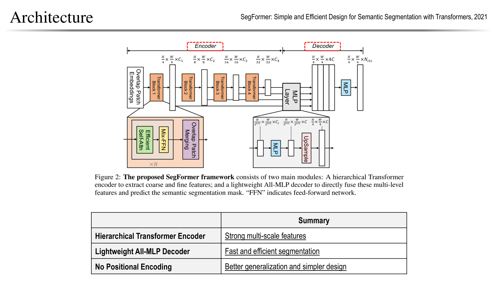
2021년 SegFormer는 분할 정확도를 확보하면서 계산량과 모델 복잡도를 줄이기 위해 Encoder와 Decoder를 함께 설계했습니다. 당시 ViT 기반 SETR의 단일 해상도 특징·큰 계산 비용과, 복잡한 분할 Decoder가 주요 개선 대상이었습니다.
Encoder — 분할에 필요한 다중 해상도 특징을 효율적으로 추출
| 개선하려던 한계 | 적용한 설계 | 목적 |
|---|---|---|
| ViT의 단일 저해상도 특징만으로 세밀한 위치와 큰 문맥을 함께 다루기 어려움 | 계층형 MiT의 네 Stage에서 입력의 1/4·1/8·1/16·1/32 특징 생성 |
얕은 공간 단서와 깊은 문맥을 Decoder에 함께 제공 |
| 겹치지 않는 패치 사이의 국소 연속성 약화 | Overlap patch embedding | 이웃 패치가 입력을 공유해 경계 주변 정보를 연결 |
| 고해상도에서 모든 토큰 쌍을 비교하는 Attention 비용 | Efficient attention에서 K·V 토큰 압축 | Query 위치를 유지하며 연산 부담 완화 |
| 고정 크기 위치 임베딩을 다른 해상도에서 보간해야 하는 문제 | 별도 위치 임베딩 대신 3×3 Depth-wise Conv를 포함한 Mix-FFN | 공간 단서를 제공하며 해상도 변경에 따른 보간 의존성 감소 |
위치 임베딩을 없애도 위치 정보가 사라지는 것은 아닙니다. 격자 구조·합성곱·Padding이 공간 단서를 제공합니다.
Decoder — Encoder가 추출한 국소·전역 정보를 가볍게 결합
기존 분할 모델은 문맥 확보와 해상도 복원을 위해 무거운 문맥 모듈이나 반복적인 합성곱을 사용했습니다. SegFormer는 Encoder가 이미 여러 해상도와 넓은 문맥을 제공하므로, Decoder는 그 특징을 간단히 융합하도록 설계했습니다.
- Stage별 Linear로 채널 수를 통일합니다.
- Bilinear upsampling으로 공간 크기를
H/4×W/4에 맞춥니다. - 채널 방향으로 Concat하고 Linear로 융합합니다.
- 클래스 점수를 예측하고, 필요하면 원본 해상도로 보간합니다.
이렇게 얕은 층의 국소 정보와 깊은 층의 전역 문맥을 결합하면서 Decoder의 파라미터·계산 비용을 줄입니다. All-MLP는 특징 변환·융합을 Linear 중심으로 한다는 뜻이며, 크기 조절을 위한 보간도 사용합니다. 또한 Decoder의 Attention으로 새 문맥을 계산하는 구조는 아닙니다.
출처: SegFormer 원 논문 — §1, §3.1–3.3.
SegFormer Efficient attention — Query는 유지하고 K·V 압축
자료: PDF 88쪽.
교안 그림 펼쳐 보기 — 본문 설명을 읽은 뒤 대조
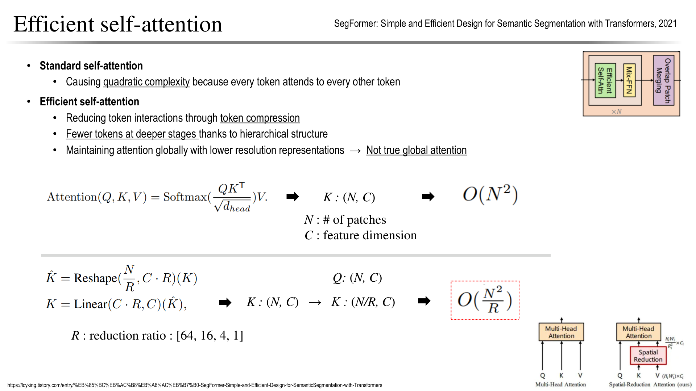
목적은 고해상도 분할에 필요한 위치별 특징을 유지하면서, Attention의 계산량과 메모리 사용량을 줄이는 것입니다.
일반 Attention은 N개 Query와 N개 Key의 N×N 관계를 계산하므로, 토큰 수가 늘면 관계 행렬의 크기가 제곱으로 증가합니다.
SegFormer는 Query를 유지하고 Key·Value만 공간적으로 압축해 각 위치가 참조할 대상의 수를 줄입니다.
| 구성 | 처리 방식 | 얻는 이득 |
|---|---|---|
| Query | 현재 Stage의 N개 위치를 유지 | 각 위치에 대응하는 출력 특징을 생성 |
| Key·Value | 토큰 수를 N/R개로 압축 | 비교·정보 집계 비용과 Attention 관계 행렬의 메모리 감소 |
여기서 Query 위치를 유지한다는 것은 현재 Stage의 특징 맵 격자를 유지한다는 뜻이며, 원본 이미지의 모든 픽셀을 그대로 유지한다는 뜻은 아닙니다.
예를 들어 현재 Stage의 토큰이 N=4,096개이고 R=64이면 K·V는 64개로 줄어듭니다. Attention Head 하나의 관계 행렬을 비교하면 다음과 같습니다.
| 방식 | 관계 행렬 크기 | 관계 수 |
|---|---|---|
| 일반 Attention | 4,096×4,096 |
16,777,216개 |
| K·V 압축 후 | 4,096×64 |
262,144개 — 기존의 1/64 |
관계 수가 1/64로 줄어도 모델 전체가 64배 빨라지는 것은 아닙니다. K·V 압축, Linear 변환, FFN 등 다른 연산도 필요합니다.
슬라이드의 R=[64,16,4,1]은 Stage별 토큰 수의 감소 비율이며, 한 변의 축소 비율과 다릅니다. 초기 Stage는 토큰이 많아 크게 압축하고, 마지막 Stage는 이미 토큰이 적으므로 추가 압축하지 않습니다.
압축된 K·V는 전체 공간을 요약하므로 각 Query는 넓은 문맥을 참조하면서 비용을 절감할 수 있습니다. 다만 세부 정보가 압축되므로 모든 원본 토큰 쌍을 직접 비교하는 것과 정보량이 같지는 않습니다. 참조 범위를 윈도우 내부로 제한하는 Swin의 방식과도 구분됩니다.
출처: SegFormer 원 논문 — §3.1 Efficient Self-Attention.
SegFormer Mix-FFN — FFN에 공간 섞기 추가
자료: PDF 89쪽.
교안 그림 펼쳐 보기 — 본문 설명을 읽은 뒤 대조
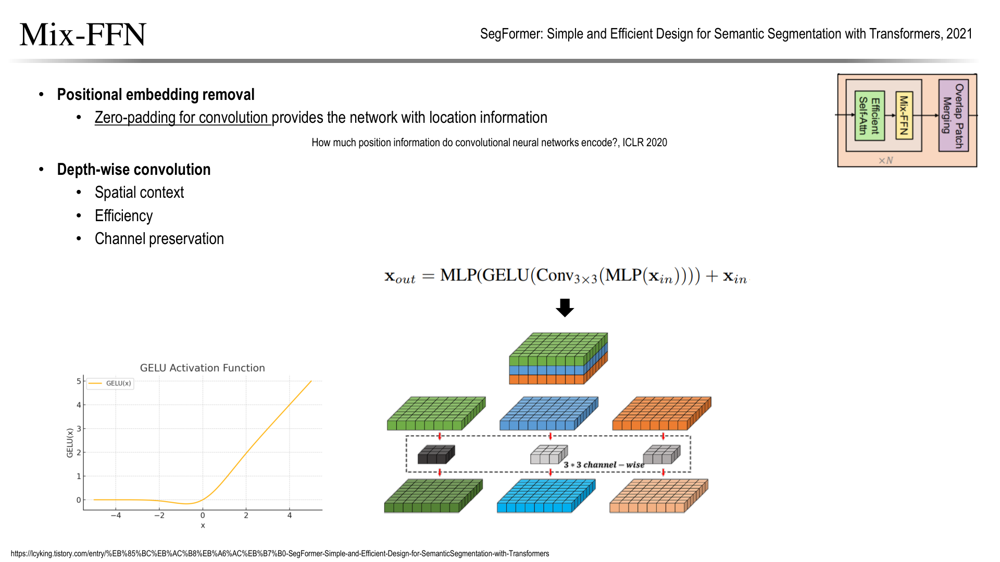
Mix-FFN은 이웃 위치의 정보를 섞어 공간 단서를 보완하고, 고정 크기 위치 임베딩에 대한 의존성을 줄이는 설계입니다.
주요 이점은 학습 때와 다른 해상도의 영상을 처리할 때 위치 임베딩을 보간할 필요가 없다는 것입니다.
해상도가 달라질 때 기존 위치 임베딩의 한계
학습 가능한 절대 위치 임베딩은 학습 시 토큰 격자 크기에 맞춰져 있습니다. 입력 해상도가 달라져 격자가 커지면, 기존 위치 임베딩을 그대로 더할 수 없어 보간으로 크기를 맞춰야 합니다.
입력의 가로·세로를 각각 1/4로 줄인 특징 격자를 사용한다고 가정하면 다음과 같습니다.
| 구분 | 입력 영상 | 토큰 격자 | 고정 크기 위치 임베딩 사용 시 |
|---|---|---|---|
| 학습 | 512×512 |
128×128 |
학습한 격자 크기의 위치 임베딩 사용 |
| 추론 | 1024×1024 |
256×256 |
위치 임베딩을 새 격자 크기로 보간 |
이 보간은 위치 표현을 조정하는 연산입니다. 학습 때와 위치 표현이 달라져 분할 성능에 영향을 줄 수 있습니다.
Mix-FFN의 개선 — 격자 크기에 묶이지 않는 공간 연산
일반 FFN의 MLP는 각 토큰을 독립적으로 처리합니다. 앞선 Attention에서 다른 위치의 정보를 받더라도 FFN 자체가 이웃 토큰을 직접 섞지는 않습니다.
Mix-FFN은 Token을 공간 격자로 해석하고, MLP 사이에 3×3 Depth-wise convolution을 넣어 이웃 정보를 결합합니다.
Linear 채널 변환 → 3×3 Depth-wise Conv → GELU → Linear 채널 변환 → 입력과 잔차 덧셈
같은 3×3 필터를 격자의 각 위치에 적용하므로 격자가 커져도 필터 크기를 바꾸거나 위치 임베딩을 보간할 필요가 없습니다.
Depth-wise는 채널별 필터로 공간 연산을 하고, 채널 간 조합은 Linear 층이 담당합니다.
Zero-padding의 경계 조건도 위치 단서를 제공합니다.
Mix-FFN이 정확한 절대 좌표를 직접 입력하는 것은 아니며, 국소 공간 정보와 위치 단서를 학습하도록 만드는 구조입니다.
따라서 다양한 입력 해상도에 대응하기 쉽고, 위치 임베딩 보간에 따른 성능 저하 요인을 줄일 수 있습니다.
다만 해상도가 달라져도 정확도가 항상 같다는 뜻은 아닙니다.
입력 크기에 따른 계산량 증가는 여전히 있으며, 영상·특징 맵의 크기를 조절하는 보간까지 모두 없어진다는 뜻도 아닙니다.
출처: SegFormer 원 논문 — §3.1 Mix-FFN 및 §4.2 위치 임베딩 비교.
SegFormer Overlap patch merging — 패치 경계의 연속성
자료: PDF 90쪽.
교안 그림 펼쳐 보기 — 본문 설명을 읽은 뒤 대조
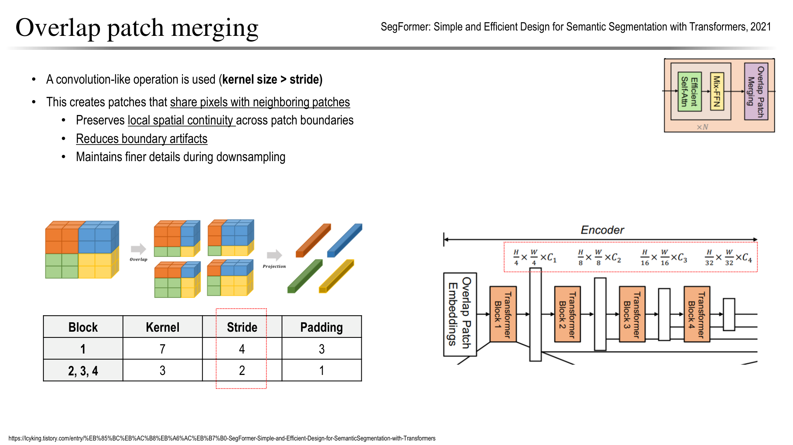
목적은 해상도를 줄여 계산 부담을 낮추면서, 인접 패치 사이의 국소 연속성을 보완하는 것입니다.
개선하려던 한계 — 패치를 나누는 경계와 물체 경계는 다름
겹치지 않는 패치는 각 영역을 따로 토큰으로 변환하므로, 패치 생성 단계에서 경계 양쪽의 정보를 함께 다루기 어렵습니다. 예를 들어 세포 윤곽이나 도로 가장자리가 패치 사이를 지나면, 실제로 이어진 구조가 서로 다른 토큰으로 나뉩니다. 이후 Attention으로 정보를 교환할 수 있지만, SegFormer는 토큰을 만드는 단계부터 이웃 영역을 함께 보도록 개선했습니다.
개선 방법 — Kernel을 Stride보다 크게 설정
겹치는 Convolution으로 입력을 특징 벡터로 변환합니다. 인접한 출력 위치가 참조하는 입력 영역이 겹치므로, 패치 경계 주변의 정보를 공유합니다.
| 위치 | Kernel / Stride / Padding | 공간 변화 | 이웃 영역 공유 |
|---|---|---|---|
| 첫 Stage | 7 / 4 / 3 |
입력의 약 1/4 | 가로로 인접한 두 7×7 영역이 3열을 공유 |
| 이후 Stage | 3 / 2 / 1 |
이전 Stage의 약 1/2 | 가로로 인접한 두 3×3 영역이 1열을 공유 |
공유 범위는 경계 Padding을 제외한 내부 위치 기준이며, 세로 방향에도 같은 원리가 적용됩니다. 첫 Stage는 이미지 픽셀을, 이후 Stage는 이전 특징 맵의 값을 공유합니다.
얻는 이득과 한계
예를 들어 512×512 입력은 128×128 → 64×64 → 32×32 → 16×16 격자로 줄어듭니다. 다운샘플링을 유지하면서도 각 토큰이 이웃의 일부를 함께 참조하므로, 국소 구조를 연결하는 데 도움이 됩니다. 다만 다운샘플링으로 줄어든 모든 세부 정보를 보존하거나, 물체 경계를 항상 정확하게 복원한다는 뜻은 아닙니다.
제목의 Merging은 Swin의 2×2 토큰 Concatenation과 같은 구체 연산이 아니라, 겹치는 Conv 기반 Embedding입니다. 공식 구현은 Conv 뒤에 LayerNorm을 적용합니다.
출처: SegFormer 원 논문 — §3.1 Overlapped Patch Merging, 공식 Encoder 구현.
SegFormer MLP decoder — 서로 다른 Stage를 같은 격자로
자료: PDF 91쪽.
교안 그림 펼쳐 보기 — 본문 설명을 읽은 뒤 대조

목적은 얕은 Stage의 세밀한 공간 단서와 깊은 Stage의 넓은 문맥을 결합하면서, Decoder의 파라미터와 연산 부담을 줄이는 것입니다.
개선하려던 한계 — 깊은 특징만으로는 부족하고 복잡한 Decoder는 비쌈
마지막 Stage만 사용하면 앞쪽 Stage의 고해상도 단서를 충분히 활용하지 못합니다. 반면 문맥 확보와 해상도 복원을 위해 많은 공간 합성곱을 쌓으면 Decoder가 무거워집니다. SegFormer는 계층형 Transformer가 이미 추출한 국소·전역 정보를 간단히 융합하는 방향을 택했습니다. 이 가벼운 Decoder의 효과는 Encoder가 제공하는 특징에 기반합니다.
처리 과정 — 채널 투영 → 격자 맞춤 → Concat → 융합 → 분류
512×512 입력과 공통 Decoder 채널 C를 가정하면 다음과 같습니다. 크기는 높이×너비×채널입니다.
| 단계 | 변환 | 필요한 이유 |
|---|---|---|
| Stage별 Linear | 각 Stage의 채널 Cᵢ → C |
서로 다른 특징을 공통 폭으로 투영 |
| Bilinear resize | 128²·64²·32²·16² → 모두 128² |
같은 이미지 위치에 대응하는 특징을 결합하도록 격자 통일; Stage 1은 크기 유지 |
| 채널 Concat | 네 개의 128×128×C → 128×128×4C |
여러 Stage의 정보를 이어 붙임 |
| 특징 융합 | 4C → C |
위치마다 Stage별 정보를 학습해 조합 |
| 클래스 예측 | C → K |
128×128×K 클래스 점수 생성 |
예측 점수는 필요에 따라 원본 크기로 보간합니다. 1/4 해상도에서 융합하므로 원본 격자에서 모든 특징을 합치는 것보다 공간 연산 부담이 작습니다. 다만 Upsampling 자체가 사라진 세부 정보를 복원하는 것은 아니며, 얕은 Stage의 특징이 이를 보완합니다.
공식 구현에서 Stage별 투영은 Linear, 융합과 분류는 1×1 Conv를 사용합니다. 1×1 Conv는 각 위치에서 채널을 조합하는 연산입니다. All-MLP는 Resize·Concat이 없다는 뜻이 아니라, 특징 변환·융합을 가벼운 채널 연산 중심으로 수행한다는 뜻입니다. Decoder에 별도의 Self-attention을 추가하지도 않습니다.
출처: SegFormer 원 논문 — §3.2 Lightweight All-MLP Decoder, 공식 Decoder 구현.
SegFormer Experiments (1/2) — 문맥·Decoder 폭·해상도 변화
자료: PDF 92쪽.
교안 그림 펼쳐 보기 — 본문 설명을 읽은 뒤 대조
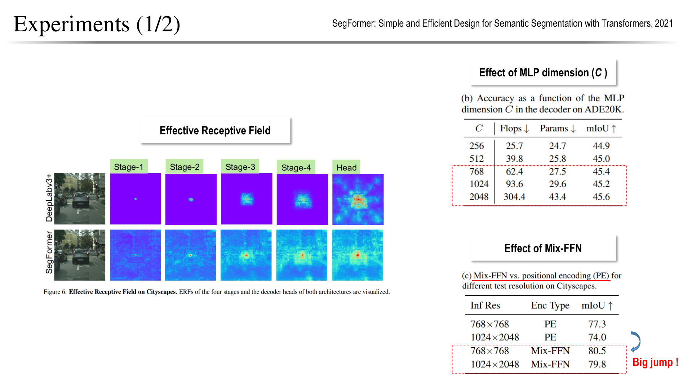
왼쪽 Effective Receptive Field는 각 출력에 영향을 미치는 입력 영역을 시각화합니다. SegFormer는 Stage와 Head에서 넓은 문맥을 활용하는 경향을 보입니다. 이는 정성 관찰이며 분할 정확도 자체를 직접 나타내는 색상표는 아닙니다.
| Decoder 채널 C | FLOPs | Params | ADE20K mIoU |
|---|---|---|---|
| 256 | 25.7 | 24.7 | 44.9 |
| 768 | 62.4 | 27.5 | 45.4 |
| 2048 | 304.4 | 43.4 | 45.6 |
C=768→2048에서 연산량은 약 4.9배인데 mIoU는 +0.2포인트입니다. 무조건 넓히기보다 성능 포화와 비용을 함께 봐야 합니다. 표의 연산량·파라미터 단위는 각각 G·M입니다.
Cityscapes의 평가 해상도가 768×768→1024×2048로 바뀔 때 PE 구성은 77.3→74.0(−3.3), Mix-FFN은 **80.5→79.8(−0.7)**입니다. 이 조건에서 해상도 변화에 덜 민감했으며, 모든 해상도에서 손실이 없다는 뜻은 아닙니다.
SegFormer Experiments (2/2) — 장면별 경계와 작은 대상
자료: PDF 93쪽.
교안 그림 펼쳐 보기 — 본문 설명을 읽은 뒤 대조
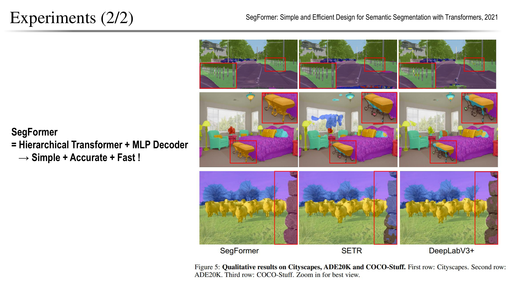
Cityscapes·ADE20K·COCO-Stuff의 행별 예시에서 SegFormer, SETR, DeepLabV3+의 출력을 비교합니다. 빨간 박스는 작은 표지·경계처럼 차이가 드러나는 영역을 강조합니다.
같은 행의 같은 대상을 비교해야 하고, 서로 다른 데이터셋의 색을 같은 클래스라고 가정하면 안 됩니다. 이 페이지는 정성 결과라 FPS나 모든 모델의 mIoU 우열을 직접 제공하지 않습니다. 구조 요점은 ‘계층 Encoder로 문맥을 만들고 가벼운 Decoder로 합친다’입니다.
7. SAM — 지시한 영역 분할
SAM Overview — Promptable segmentation
자료: PDF 94쪽.
교안 그림 펼쳐 보기 — 본문 설명을 읽은 뒤 대조

개선하려던 한계 — 새 대상·과제마다 분할 모델을 준비하는 비용
특정 범주와 데이터셋에 맞춘 분할 모델은 새로운 대상·환경에 적용할 때 추가 주석과 학습이 필요할 수 있습니다. SAM은 “정해진 클래스의 픽셀을 찾기”에서 “Prompt가 가리키는 영역을 분할하기”로 과제를 바꾸어, 하나의 모델을 여러 분할 작업에 재사용하려 했습니다.
개선 방법과 이득 — Prompt로 대상을 지정하고 마스크를 재사용
점·박스·이전 마스크로 원하는 영역을 지정합니다. 사람의 클릭뿐 아니라 다른 검출기가 만든 박스도 Prompt로 사용할 수 있어, 대화형 주석과 자동 파이프라인을 같은 분할 모듈로 구성할 수 있습니다. 이는 새 작업의 데이터 수집·재학습 부담을 줄이려는 방향이며, 모든 도메인에서 추가 학습이 불필요하다는 뜻은 아닙니다.
무거운 이미지 인코딩은 한 번 계산하고, 가벼운 Decoder로 Prompt 변경에 반복 대응합니다.
원 SAM의 일반 공개 모델은 시각 Prompt 중심입니다. 슬라이드의 Text phrase는 논문의 별도 탐색 실험으로 뒤에서 구분합니다. ‘Segment Anything’은 모든 개념·모든 영상에서 정확한 결과를 보장하거나 자동으로 물체 이름을 붙인다는 뜻은 아닙니다.
SAM Dataset & Labeling — 모델과 데이터 엔진의 반복 개선
자료: PDF 95쪽.
교안 그림 펼쳐 보기 — 본문 설명을 읽은 뒤 대조
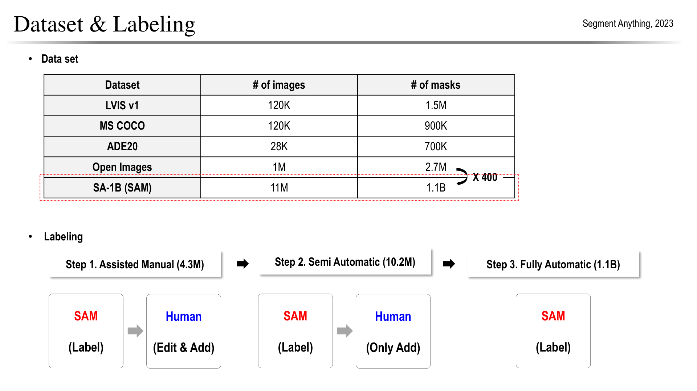
개선하려던 한계 — 마스크 주석은 비싸고 인터넷에서 쉽게 모으기 어려움
- 범용 분할에는 다양한 마스크가 필요하지만, 픽셀 단위 수작업만으로 규모를 늘리기는 어렵습니다.
- 모델로 주석을 돕고, 모은 주석으로 모델을 개선해 자동화 범위를 넓히는 Data engine을 사용했습니다.
- SA-1B는 약 1,100만 장의 이미지와 11억 개의 마스크로 구성됩니다. 이미지 수와 마스크 수는 다르며 한 이미지에 여러 개체·부위가 포함될 수 있습니다.
| 수집 단계 | 사람과 모델의 역할 | 슬라이드의 마스크 규모 |
|---|---|---|
| Assisted manual | 모델이 제안하고 사람이 편집·추가 | 4.3M |
| Semi-automatic | 모델이 일부를 찾고 사람이 빠진 대상 추가 | 누적 10.2M |
| Fully automatic | 격자 Prompt 등으로 자동 마스크 생성 | 약 1.1B |
얻는 이득 — 사람의 시간을 어려운 대상에 쓰고 수집 규모 확대
- 처음에는 수정 시간을 줄이고, 다음에는 사람이 놓치기 쉬운 대상을 추가하며 다양성을 높입니다.
- 마지막에는 격자 점 Prompt로 후보를 생성하고 품질·안정성 필터와 NMS로 선별해 대규모 수집을 가능하게 합니다. SA-1B의 약 11억 마스크를 사람이 모두 직접 그린 것은 아닙니다.
- 그림의 약 400배는 특정 비교 데이터셋의 마스크 수와 비교한 규모입니다. 범주 수나 정확도가 400배라는 의미는 아닙니다.
- 마스크 수가 많아도 개념·지역·촬영 조건의 편향과 주석 품질은 별도로 평가해야 합니다.
출처: Meta 공식 설명 — SA-1B Data engine.
SAM Architecture — 이미지 재사용과 Prompt 조건화
자료: PDF 96쪽.
교안 그림 펼쳐 보기 — 본문 설명을 읽은 뒤 대조

개선하려던 한계 — 클릭할 때마다 무거운 이미지 처리를 반복하면 느림
사용자가 Prompt를 수정하는 동안 원본 이미지는 그대로입니다. 따라서 변하지 않는 이미지 처리와 매번 달라지는 Prompt 처리를 분리해, 무거운 연산 결과를 재사용하도록 설계했습니다.
| 모듈 | 처리와 개선 의도 | 얻는 이득 |
|---|---|---|
| Image Encoder | MAE 사전학습 ViT로 이미지 특징을 먼저 추출 | 같은 이미지의 특징을 여러 Prompt에 재사용 |
| Prompt Encoder | 점·박스를 Sparse embedding, 입력 마스크를 Dense embedding으로 변환 | 다른 형태의 사용자 지시를 모델이 처리할 특징으로 표현 |
| Mask Decoder | 이미지·Prompt 특징을 결합해 후보 마스크와 품질 점수 생성 | 이미지 Encoder를 반복 실행하지 않고 마스크 갱신 |
원 SAM의 대표 입력은
- 긴 변을 1024로 맞춘 뒤 Padding하여 인코딩하고, 64×64×256 이미지 Embedding을 만듭니다.
- 같은 이미지에서 클릭만 바뀌면 이미지 Encoder를 다시 실행할 필요가 없습니다.
흐름은 이미지 → Image Encoder → 특징 저장 → Prompt 입력·수정 → Prompt Encoder와 Mask Decoder → 마스크입니다.
빠른 반복 응답은 이미지 특징을 미리 계산한 조건의 이득이며, 최초 인코딩 비용까지 사라지는 것은 아닙니다. 이미지가 바뀌면 다시 인코딩해야 합니다.
점·박스에는 위치 표현과 종류 Embedding이 사용됩니다.
슬라이드의 CLIP Text Encoder 경로는 별도 Text-to-mask 변형이며 기본 공개 체크포인트의 표준 입력 기능으로 혼동하면 안 됩니다.
출처: 원 SAM 공식 사용법 — 이미지 설정과 반복 예측, 공식 Prompt Encoder 구현.
SAM Mask decoder — 여러 답이 가능한 Prompt
자료: PDF 97쪽.
교안 그림 펼쳐 보기 — 본문 설명을 읽은 뒤 대조

개선하려던 한계 — 점 하나만으로는 원하는 분할 단위를 알기 어려움
예를 들어 사람이 입은 옷 위를 클릭하면, 원하는 영역이 옷인지 사람 전체인지 모호할 수 있습니다.
하나의 마스크만 강제하면 여러 유효한 해석을 충분히 표현하기 어렵습니다.
SAM은 Prompt에 맞춘 가벼운 마스크 생성과 여러 후보 출력으로 대응했습니다.
Ambiguity — 같은 Prompt에 여러 타당한 분할이 가능한 상태
Ambiguity(모호성)는 주어진 Prompt만으로 사용자가 원하는 대상이나 분할 범위를 하나로 정할 수 없는 상태입니다. 영상이 흐릿하거나 모델이 자신 없어 하는 상황만을 뜻하지 않습니다.
영상이 선명해도 점 하나는 위치만 알려주므로, 대상의 전체와 부분 중 무엇을 선택할지는 불명확할 수 있습니다.
예를 들어 셔츠의 소매 위를 클릭하면 다음 영역이 모두 그 점을 포함할 수 있습니다.
| 가능한 해석 | 마스크가 나타내는 범위 |
|---|---|
| 하위 부위 | 소매 영역 |
| 부분 | 셔츠 전체 |
| 전체 대상 | 셔츠를 입은 사람 전체 |
이는 모호성을 설명하는 예시이며, 실제 모델이 항상 이 세 영역을 정확히 출력한다는 뜻은 아닙니다.
왜 여러 마스크를 제시할까? — 하나로 섞지 않고 유효한 해석을 남기기
모호한 Prompt에 단일 출력만 강제하면 서로 다른 정답 해석이 학습 과정에서 충돌해, 어느 해석에도 잘 맞지 않는 절충된 마스크를 만들 수 있습니다.
SAM은 서로 다른 해석을 별도 마스크 후보로 출력하고, 각 후보의 예상 IoU 점수도 제공합니다.
따라서 여러 후보는 서로 다른 물체를 반드시 하나씩 찾는 결과가 아니라, 같은 Prompt에 대한 대안적인 분할 결과입니다.
후보 수는 어떻게 결정할까? — 모호성에 따라 늘어나는 개수가 아닌 설계값
원 SAM의 다중 마스크 후보 수는 모델 설계 시 정한 설정값이며, 기본값은 num_multimask_outputs=3입니다.
입력의 모호성을 측정해 후보 개수를 자동으로 늘리거나 줄이지 않습니다. 논문은 전체·부분·하위 부위처럼 중첩되는 흔한 모호성을 다루는 데 3개가 충분했다고 설명합니다.
따라서 3은 발견한 물체 수나 정답 수가 아니라, 대안적인 해석을 표현하도록 마련한 후보 슬롯 수입니다. 각 슬롯이 전체·부분·하위 부위 중 하나에 고정되는 것도 아닙니다.
공식 구현은 기본적으로 마스크 토큰을 3+1=4개 두고, 실행 설정에 따라 반환할 출력을 구분합니다.
| 실행 설정 | 사용하는 마스크 토큰 | 반환 결과 |
|---|---|---|
multimask_output=True |
다중 후보용 토큰 3개 | 대안 마스크 3개와 각각의 예상 IoU |
multimask_output=False |
별도의 단일 출력용 토큰 1개 | 마스크 1개와 예상 IoU |
단일 출력 모드는 다중 후보 3개 중 최고 점수 하나를 고르는 방식이 아닙니다.
별도의 단일 출력용 토큰에서 나온 마스크를 반환합니다. 다중 출력 후 사용자가 예상 IoU로 하나를 선택하는 것은 별도의 선택 절차입니다.
사용자는 후보를 선택하거나 전경·배경 점, 박스를 추가해 의도를 명확히 할 수 있습니다.
예상 IoU가 가장 높은 후보도 사용자가 원한 범위와 다를 수 있으므로, 품질 예측과 사용자 의도는 구분해야 합니다.
동작과 이득 — 조건에 따라 마스크를 만들고 후보를 비교
Transformer Decoder는 Prompt/Output token과 이미지 Embedding 사이에 양방향 Cross-Attention을 적용합니다.
출력 토큰으로 만든 마스크별 가중치와 업샘플링한 이미지 특징을 결합해 마스크를 만들고, 다른 Head가 예상 IoU 품질을 예측합니다.
출력 토큰은 고정된 의미 클래스가 아니라 Prompt에 따른 마스크 후보를 만드는 역할입니다.
점 하나가 물체의 일부·전체·하위 부위를 뜻할 수 있어 여러 후보를 출력합니다.
모호한 Prompt의 다중 마스크 학습에서는 후보 중 가장 작은 손실을 주는 마스크 경로로 학습해 서로 다른 유효 영역을 표현하게 합니다.
추론에서는 정답이 없으므로 실제 IoU가 아니라 예측 품질이나 사용자 선택으로 후보를 고릅니다.
IoU score는 정답 마스크를 보고 계산한 평가 IoU가 아니라 모델이 추정한 품질 점수입니다.
다중 후보는 모호한 입력에 여러 해석을 남기고, 품질 점수는 자동 선택을 돕습니다. 잘못 고른 영역은 추가 전경·배경 점이나 박스로 수정할 수 있습니다.
다만 품질 점수가 높다는 것이 사용자가 의도한 대상임을 보장하지는 않습니다.
출처: SAM 원 논문 — §3 모호성 처리, 공식 Mask Decoder 구현.
SAM Zero-shot experiments (1/3) — 한 점 분할과 경계 추출
자료: PDF 98쪽.
교안 그림 펼쳐 보기 — 본문 설명을 읽은 뒤 대조
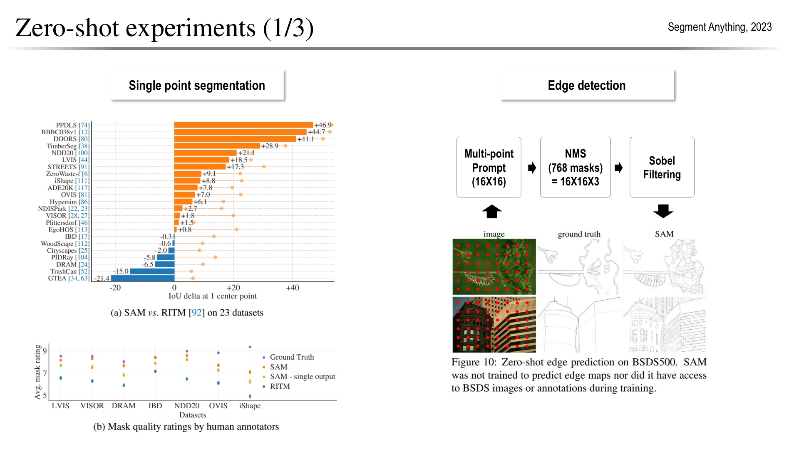
검증하려는 이득은 적은 Prompt로 낯선 데이터에서도 유효한 영역을 만들고, 그 마스크를 다른 작업에 재사용할 수 있는가입니다.
여기서 Zero-shot은 해당 평가 과제·데이터셋에 맞춰 SAM을 추가 학습하지 않았다는 의미입니다.
왼쪽은 여러 데이터셋에서 단일 점 Prompt로 유효 마스크를 만드는 성능과 사람의 품질 평가입니다.
오른쪽은 격자 점에서 마스크를 모으고 중복을 제거한 뒤 경계를 추출하는 파이프라인입니다.
슬라이드의 16×16점×3후보=768은 필터링 전 후보 수입니다. NMS 이후에도 항상 768개가 유지되는 것은 아닙니다. Sobel 연산으로 마스크 경계를 만드는 전이가 곧 별도 경계 검출기로 학습했다는 뜻도 아닙니다.
따라서 이 페이지는 Prompt와 후처리를 바꾸어 분할 모델을 경계 추출에도 활용하는 유연성을 보여줍니다. 수작업 정답 경계와의 일치도, 후보 수, 처리 비용은 별도로 평가해야 합니다.
SAM Zero-shot experiments (2/3) — Proposal과 Instance mask
자료: PDF 99쪽.
교안 그림 펼쳐 보기 — 본문 설명을 읽은 뒤 대조

검증하려는 이득은 고정 클래스에만 묶이지 않는 영역 후보 생성과, 기존 검출기의 박스를 마스크로 바꾸는 재사용성입니다.
Proposal은 물체일 가능성이 있는 영역을 제안하는 단계이고, Instance mask 평가는 각 대상의 픽셀 영역을 얼마나 잘 맞추는지 봅니다.
| LVIS Proposal 평가 — AR@1000 | 전체 | Small | Rare |
|---|---|---|---|
| ViTDet-H | 63.0 | 51.7 | 58.3 |
| SAM 단일 출력 | 54.9 | 42.8 | 62.0 |
| SAM 다중 출력 | 59.3 | 45.5 | 65.8 |
다중 출력은 단일 출력보다 전체 Recall을 +4.4포인트 높입니다. SAM은 Rare 범주에서는 강하지만 Small은 ViTDet보다 낮습니다. 추가 과제 학습 없이 폭넓은 후보를 만들 수 있다는 장점과 모든 크기에서의 우세는 다른 주장입니다.
Instance segmentation의 마스크 AP는 COCO에서 ViTDet-H 51.0 대 SAM 46.5, LVIS에서 46.6 대 44.7입니다. 사람의 마스크 품질 평가는 SAM이 높을 수 있어, 벤치마크 주석과 사람의 선호가 일치하지 않는 경우도 나타납니다. 이 실험의 Zero-shot은 분할 모듈 기준이며, 클래스와 박스를 공급하는 검출 과정까지 라벨 없이 해결했다는 뜻은 아닙니다.
실용적인 이득은 검출기 → 박스 Prompt → SAM 마스크로 연결할 수 있다는 점입니다. 표의 결과는 이러한 전이 가능성을 보여주지만, 전용 모델보다 모든 지표에서 우수하다는 근거는 아닙니다.
SAM Zero-shot experiments (3/3) — CLIP을 통한 Text-to-mask
자료: PDF 100쪽.
교안 그림 펼쳐 보기 — 본문 설명을 읽은 뒤 대조

개선하려는 점은 좌표를 직접 찍는 대신 이름·설명으로 대상을 지정하되, 마스크별 텍스트 주석을 새로 만드는 비용을 줄이는 것입니다.
이 페이지는 텍스트를 인식하도록 학습 절차를 바꾼 SAM의 개념 검증 실험입니다.
학습 때 마스크 영역의 CLIP 이미지 임베딩을 Prompt로 쓰고, 추론 때 같은 공간에 정렬된 CLIP 텍스트 임베딩으로 대체합니다. 새 텍스트 주석을 직접 만들지 않고 이미지·텍스트 정렬을 이용합니다.
그림에서 wheel·grille은 성공하지만 wiper는 실패할 수 있으며, 추가 점 Prompt가 대상을 명확히 하는 데 도움을 줍니다.
기본 SAM에 문장을 넣으면 그대로 동작한다는 안내가 아닙니다. 텍스트 검출기와 SAM을 연결한 Grounded SAM 같은 구성도 별도 시스템입니다.
보충 출처: SAM 원 논문 §7.5 — 별도 Text-to-mask 학습과 한계.
SAM Summary — 모델·데이터·상호작용의 기반
자료: PDF 101쪽.
교안 그림 펼쳐 보기 — 본문 설명을 읽은 뒤 대조
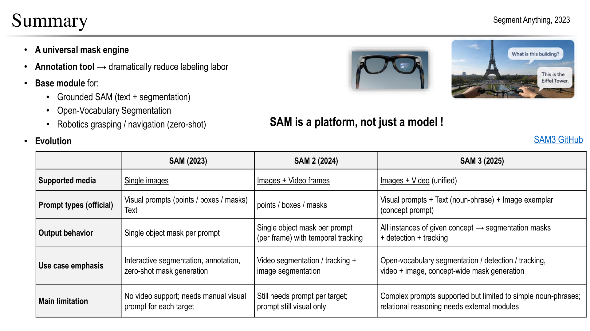
SAM의 핵심은 과제마다 전용 분할 모델을 만드는 부담을 줄이고, Prompt로 재사용할 수 있는 마스크 생성 기반을 제공한 것입니다.
| 개선하려던 한계 | 설계 방향 | 얻는 이득 |
|---|---|---|
| 대상·과제별 주석과 학습 부담 | 대규모 학습과 Prompt 기반 대상 지정 | 새 작업에 분할 모듈로 재사용 |
| 대규모 마스크 수집 비용 | 사람과 모델이 함께 개선되는 Data engine | 주석 효율·다양성·수집 규모 확대 |
| 반복 클릭마다 무거운 연산 | 이미지 특징 저장과 가벼운 Decoder | 빠른 수정·반복 상호작용 |
| Prompt의 분할 단위가 모호함 | 다중 마스크와 예상 품질 점수 | 여러 유효한 해석을 제시하고 선택 지원 |
마스크 생성, 객체 이름 판별, 영상 ID 유지는 서로 다른 기능입니다. 후속 계열은 다음처럼 부족한 축을 확장했습니다.
| 계열 | 주된 매체·입력 | 핵심 변화 |
|---|---|---|
| 원 SAM — 2023 | 이미지, 점·박스·마스크 Prompt | 재사용 가능한 Prompt 기반 마스크 생성 |
| SAM 2 — 2024 | 이미지·영상, 시각 Prompt | Streaming memory를 통한 영상 분할·전파 |
| SAM 3 — 2025 | 이미지·영상, 텍스트·시각 예시와 시각 Prompt | 개념에 해당하는 여러 개체의 검출·분할·추적 |
슬라이드의 원 SAM 공식 입력에 Text를 포함한 표기는 기본 공개 기능과 다릅니다.
원 SAM도 격자 점을 사용해 여러 영역을 자동 생성할 수 있으므로 모든 물체에 사람이 직접 클릭해야만 하는 것은 아닙니다. SAM 2가 시간축 메모리를, SAM 3가 개념 기반 전체 개체 예측을 확장한 차이로 읽습니다.
위 표는 강의에서 다룬 버전을 비교한 것으로, 최신 릴리스 전체 목록은 아닙니다. 복잡한 문장 추론·정밀 경계·가려진 대상·도메인 차이에서는 별도 검증과 보완이 필요합니다.
보충 출처: 원 SAM 공식 구현, SAM 2 공식 설명, SAM 3 공식 설명.
8. 분할 평가와 작은 계산
학습 손실은 모델을 어떻게 고칠지 정하고 평가 지표는 결과를 어떻게 비교할지 정합니다. 낮은 손실이 특정 클래스의 좋은 경계나 개체 분리를 자동 보장하지 않습니다.
Segmentation metrics — IoU·mIoU·FWIoU
자료: PDF 65쪽.
교안 그림 펼쳐 보기 — 본문 설명을 읽은 뒤 대조
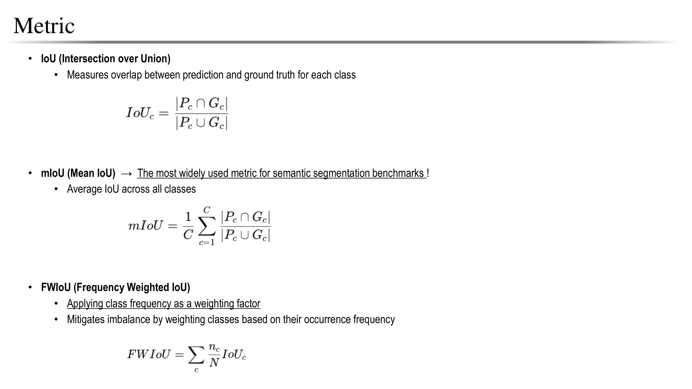
클래스 c의 예측 픽셀 집합을 P, 정답을 G로 놓고 IoU를 계산합니다. 이는 검출 박스의 겹침이 아니라 픽셀 영역의 겹침입니다.
mIoU는 클래스들을 같은 비중으로 보고, FWIoU는 정답 픽셀 빈도가 높은 클래스에 큰 비중을 줍니다.
FWIoU가 희소 클래스 불균형을 자동으로 해결한다는 설명은 부정확합니다.
도로·하늘이 많으면 작은 사람이나 표지판 성능이 가려질 수 있습니다.
Ignore label과 미등장 클래스 처리도 평가 구현을 따라야 합니다.
교육용 계산 — 배경이 많을 때 평균의 차이
20픽셀 영상에서 정답 전경 5개, 정답 배경 15개라고 합시다. 전경 4개를 맞히고 1개를 배경으로 놓쳤으며, 배경 2개를 전경으로 잘못 예측했습니다.
| 정답 ↓ / 예측 → | 전경 | 배경 | 정답 수 |
|---|---|---|---|
| 전경 | 4 | 1 | 5 |
| 배경 | 2 | 13 | 15 |
전경 기준 TP=4, FP=2, FN=1이므로 IoU=4/(4+2+1)=4/7≈0.5714입니다. 배경 기준으로 역할을 바꾸면 TP=13, FP=1, FN=2이므로 IoU=13/16=0.8125입니다.
- mIoU=(4/7+13/16)/2≈0.6920입니다. 두 클래스를 동등하게 평균합니다.
- FWIoU=(5/20)×(4/7)+(15/20)×(13/16)≈0.7522입니다. 정답 픽셀 빈도로 가중하므로 많은 배경의 영향이 큽니다.
- Pixel accuracy=(4+13)/20=0.85입니다. 맞힌 픽셀 비율로, mIoU와 같은 값이 아닙니다.
FWIoU를 쓴다고 희귀 클래스의 오류가 자동으로 중요해지지 않습니다. 전경을 모두 놓쳐도 배경만 많으면 높은 픽셀 정확도를 얻을 수 있으므로 작은 결함·얇은 경계는 클래스별 지표와 사례를 따로 봅니다. 클래스가 정답·예측 모두에 없어 IoU 분모가 0인 경우의 제외 규칙, Ignore 라벨, 배경 포함 여부도 평가 프로토콜에 명시해야 합니다.
손실과 좌표의 작은 계산
FCN에서 유효한 두 픽셀의 정답 클래스 확률이 0.8, 0.5이면 평균 교차엔트로피는 −(ln 0.8+ln 0.5)/2≈(0.2231+0.6931)/2=0.4581입니다. 자연로그를 쓰며 Ignore 픽셀은 분모와 합에서 제외합니다. 정답 클래스 확률이 작을수록 벌점이 커집니다.
U-Net 최상단 Skip에서 568×568 특징을 392×392에 맞추려면 각 면 (568−392)/2=88칸을 자릅니다. 두 경로가 각각 64채널이면 Concat은 392×392×128입니다. 이어지는 3×3 Valid Conv 두 번은 392→390→388로 줄이며 출력 채널 64는 필터 수로 결정됩니다. 덧셈과 Concat을 혼동하면 채널 수가 맞지 않습니다.
Transpose convolution을 1차원으로도 확인할 수 있습니다. 입력 [1,2], 필터 [1,2,3], stride 2, padding 0이라면 첫 입력은 출력 0·1·2에 [1,2,3], 두 번째 입력은 출력 2·3·4에 [2,4,6]을 더합니다. 합은 [1,2,5,4,6]입니다. 겹친 위치에서 값을 합치는 연산이며 이전 합성곱의 원본을 복원한다는 뜻이 아닙니다.
마스크 품질을 무엇으로 비교할까
Semantic은 클래스별 IoU·mIoU를, Instance는 마스크 IoU로 정답 개체와 일대일 매칭한 Mask AP를 확인합니다. 박스 AP가 높아도 윤곽이 나쁘면 Mask AP는 낮을 수 있습니다. Panoptic은 의미와 개체 분리를 함께 평가하는 PQ 등의 전용 기준을 사용합니다. Prompt 기반 분할은 점 개수·박스 제공자·후보 선택 규칙까지 맞춰야 비교가 공정합니다. 정답 IoU로 후보를 고르는 평가와 모델의 예상 IoU로 고르는 추론은 서로 다릅니다.
9. 스스로 확인하기
- 같은 클래스의 세포 두 개가 붙어 있다. Semantic 마스크만으로 개수가 반드시 2라고 알 수 있는가? 장면의 배경까지 포함하며 개체를 분리하려면 어느 과제가 필요한가?
- FCN-8s의 8은 무엇인가? U-Net의 Skip Concat과 원 FCN의 Skip fusion은 어떻게 다른가?
- U-Net의 568×568×64 특징을 392×392×64와 결합하기 위한 Crop과 Concat 결과를 계산하라. Max Pooling이 채널을 두 배로 만드는가?
- RoIAlign의 네 이웃 값이 2·4·6·8이고 샘플 위치가 정중앙이면 값은? Mask R-CNN은 모든 클래스 마스크 채널을 Softmax로 경쟁시키는가?
- 8절 혼동행렬에서 전경 IoU와 mIoU를 계산하라. FWIoU가 더 높다는 것은 전경 경계가 더 좋아졌다는 뜻인가?
- 확장 학습 — §6 SegFormer를 읽은 뒤: SegFormer에서 N=4096, 토큰 감소비 R=64이면 Attention 관계 수는 얼마인가? 전체 실행 시간이 반드시 64배 줄어드는가?
- 확장 학습 — §7 SAM을 읽은 뒤: SAM 다중 후보가 3개면 물체도 3개인가? 셔츠 대신 사람 전체가 선택되면 점수만 높여 해결할 수 있는가?
해설과 복귀 위치
- 아닙니다. 같은 클래스 마스크에는 두 개체의 ID가 없고 붙은 픽셀은 하나의 연결 영역일 수 있습니다. 배경과 개체를 모두 설명하려면 Panoptic을 고려합니다. 1절에서 출력 계약을 비교합니다.
- 입력에 대한 예측 격자의 stride입니다. 클래스 수가 아닙니다. 원 FCN은 크기를 맞춘 클래스 점수 맵을 더하고 U-Net은 특징을 채널로 이어 붙입니다. 3절과 4절로 돌아갑니다.
- 각 면 (568−392)/2=88, 결합은 392×392×128입니다. Pooling은 공간만 줄이고 채널 확대는 뒤 합성곱의 필터 수가 결정합니다. 4절의 크기 표를 따라갑니다.
- 네 가중치가 1/4이므로 (2+4+6+8)/4=5입니다. Mask head는 클래스별 Sigmoid를 사용하고 학습은 정답 클래스 채널의 이진 손실을 사용합니다. 5절을 복습합니다.
- 전경 4/(4+2+1)=4/7, 배경 13/(13+1+2)=13/16, mIoU≈0.6920입니다. 동일 예측에 가중 방식만 달라졌으므로 경계가 개선된 것이 아닙니다. 8절로 돌아갑니다.
- K·V는 4096/64=64토큰, 관계 수는 4096×64=262144입니다. 일반 16777216의 1/64이지만 투영·FFN·업샘플링 비용이 남으므로 전체 속도 배수는 별도 측정해야 합니다. 6절을 확인합니다.
- 세 후보는 같은 Prompt의 대안 해석이며 물체 수가 아닙니다. 예상 품질은 사용자 의도를 보장하지 않으므로 추가 점·박스로 범위를 지정하거나 후보를 선택합니다. 7절의 모호성 설명을 확인합니다.
복습할 때는 출력 단위 → 공간 정보가 사라지는 위치 → 보완 경로 → 평가 단위를 순서대로 설명해 봅니다. 시간에 따라 마스크의 동일성까지 유지해야 한다면 객체 추적의 ID·수명 관리가 다시 필요합니다.
보충 출처: FCN 원 논문, Mask R-CNN 원 논문, Panoptic Segmentation 원 논문. SAM 2·3 비교는 교안에 등장한 계열의 역할 설명이며 최신 릴리스 목록이나 현재 API 실행 안내가 아닙니다.
기준 본문은 기존 Markdown입니다. 수식·도표는 온라인 렌더러를 사용하며, 원문과 도표 원문으로도 확인할 수 있습니다.